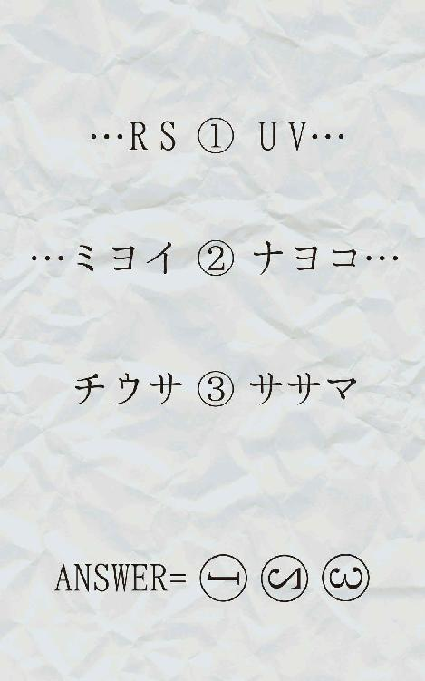
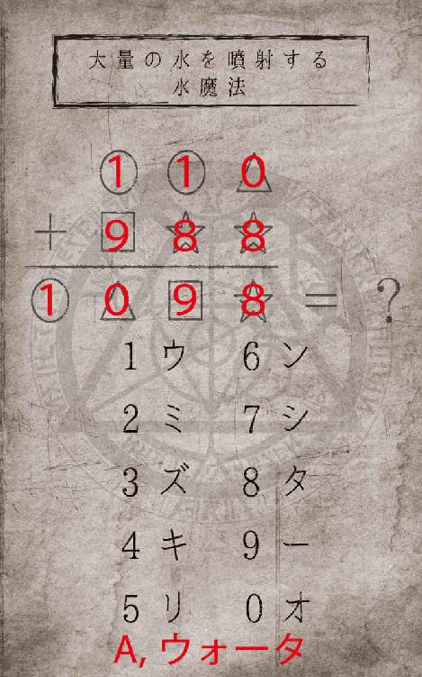

| エリザベス姫と古びた城 ナゾトキブック (幻想迷宮ゲームブック) | |
| マスタッシュ | |
| GENSOUMEIKYUU SHOTEN (2017) | |
幻想迷宮ゲームブック
エリザベス姫と古びた城
マスタッシュ
ある日のことでした。
平凡でのどかな昼下がり、食器棚の前で銀食器磨きに勤しむ影が２つありました。
イングランドの南部に広がる穏やかな農村といくつかの小さな町から成るこの辺りの地域を治めていたのは、マスタッシュ家という貴族の一族でした。マスタッシュ・ジョリー＝モッサリー伯爵を主人とするこの一族にあなたが仕えることになったのはつい最近のこと。深い緑色の山々を背負い、周囲をなだらかな丘に囲まれた静かで気品溢れるお屋敷の佇まいにかねてから惚れ込んでいたあなたが、従者募集中、年齢性別は特に問いません、という張り紙を見つけたのはもはや運命と言ってもいいくらいで、だめ元でお屋敷の門を叩くと、マスタッシュ伯爵とお屋敷の人々はあっさりとそのことを了承してくれたのです。新米従者となったあなたは、慣れないながら今日も一生懸命働いました。
難しい顔をしながら銀のスプーンを磨いていると、隣であなたの様子を見ていたじいやが、おほん、と一つ咳払いをします。
「おやおや、それではくもりは取れませんぞ」
そう言うとじいやは皮の薄い骨ばった手をあなたの方へ差し出しました。貸してみなさい、ということのようです。あなたがその手の上にスプーンを乗せると彼は目にも止まらない動きでそれを磨き始めました。真っ白な布巾に擦られて、みるみるうちに銀色の輝きが取り戻されていくのが分かります。笑顔のじいやがあなたにそれを手渡した時にはもう、スプーンはまるで宝石と幾分も違わないかのように、シャンデリアの明かりを浴びてきらりと光っていたのでした。
「食器のくもりは心のくもり。雑念はすぐ食器に反映されるのですよ」
じいやの細い目が更に細められました。あなたはなんだか感心して、ほうとため息をつきながら銀食器たちを眺めます。
その時、厨房の扉が大きな音を立てて開きました。
「アルバート、ちょっとアルバート！ どこですの？」
平和な時間を切り裂くような突然の訪問者に目を丸くするじいやとあなた。そこには、長い金髪を揺らし、手を腰に当てて叫んでいる少女がいました。
彼女の名前はエリザベス。齢17の、マスタッシュ家の令嬢です。ちょっと我が強いのが玉に瑕ですが、思いやりのある優しい彼女はお屋敷の従者たちだけでなく領地の人々にも愛されていて、みんなから慕われています。ついた愛称は「エリザベス姫」。実際の王女ではないのですが、わがままで可愛らしいあの子にはぴったりの呼び名でしょう、という、いつだかのじいやの柔らかい口調をあなたは思い出します。長年このお屋敷でマスタッシュ家の従者の統括をしている彼はやはり、こんな風に大声を出す姫さまにはもう慣れているようです。
「おや、姫さま。どうなさいましたかな」
「どうもこうもないですわ！」
美しいフリルの付いたスカートを揺らしながらじいやの方へつかつかと歩み寄る姫さま。しかしまだお屋敷に来て間もないあなたは、なぜ彼女がこんなに騒いでいるのか分からずにあたふたしてしまいます。姫さまはふとじいやから視線を外して、そんなあなたの様子をまじまじと見ました。
「あら、見ない顔ね。新人かしら？」
「は、はい」
おどおどと答えます。姫さまはあなたの返事を聞くと、丁度よかったと言うように顔を綻ばせて言いました。
「そう、じゃあ仕事ですわ。アルバートを探すお手伝いをしてちょうだい。」
アルバートとはエリザベス姫の専属従者長。あなたにとっては先輩にあたる青年です。なんでもそつなくこなす彼に姫さまはいつでも甘えっぱなしで、いつも彼を呼びつけてはお得意のわがままや無理難題を押し付けている、というような話を聞いたことがあります。
普段は姫さまの傍にいる彼ですが、今日はどこかで別の仕事をしているのかもしれません。
「ほら！ そんなちまちました作業なんかどうでもいいですわ！ 早く行きますわよ」
「あ、ちょっと......！」
慌てているうちに姫さまはずんずんと大股でこちらに近づき、あなたの袖をむずと掴みました。そのまますごい力で引っ張られて、あなたは先程磨いた（正確にはじいやに磨いてもらった）ばかりの銀のスプーンを落としてしまいましたが、姫さまには逆らえずそのまま部屋を後にしました。
じいやは甲高い音を立てて床に叩きつけられたそれをゆっくりと拾い上げると、
「やれやれ......」
と、深いため息をつくのでした。
|
ナゾトキブックの楽しみ方 |
１階の大広間に着くと、さっそく姫さまは言いました。
「さぁて、どこから探そうかしら！」
やる気満々の姫さまのお役になんとか立とうと意気込むあなたでしたが、ふと疑問に思って首を傾げました。おそるおそる、小さな声で姫さまに尋ねます。
「あ、あの......アルバートさんにどんなご用事が......？」
余計なことを聞かないで、というように眼光鋭くこちらを向いた姫さま。しかしすぐにそんな表情は崩れ、不敵な笑みがこぼれました。何かよからぬことを企んでいるような顔つきです。あなたがどきどきしていると、姫さまは右手の人差指を唇に当てて言いました。
「ヒ・ミ・ツ、ですわ」
はぐらかされてしまったようですが、とにかく今はアルバートを探すしかなさそうです。
さて、どこへ行きますか？
あなたはふと思い出して、子供部屋で拾った玩具の指輪を差し出しました。アネットの話からすると、あの子供部屋は昔この城に住んでいたというアネットのものでしょう。彼女が失くしてしまったと言っていた探しものは、もしかしたらこれではないでしょうか。
指輪を見たアネットが目を見開きました。唇が小さく震えています。
「それ......どこにあったの」
「お城の一階の、子供部屋に。玩具箱の隅に眠っていました」
「わ......わたしのだ......」
アネットの小さな手に指輪をころんと転がすと、くすんでいたそれは少し輝きを取り戻したように見えました。
「姫さまが持っていくように言ってくださったんです。見つかって、よかったですね」
あなたが小さく首を傾げて微笑むのと、アネットの瞳から一粒涙が落ちるのが同時でした。じわりと瞳の中の夜が揺らめき、ぼやけて暖かさを取り戻します。涙は後からどんどん溢れて目を縁取る長い睫毛を濡らし、そこに照明の明かりが当たって光の粒を纏っているように見えます。
「ありがとう、ありがとう......」
俯きながらそう言うアネットに姫さまは何も言えませんでした。しかし、肩を抱くアルバートの手をそっとほどくと彼女の方に近づいていき、どうしたらいいか分からないといった表情でおずおずと、リボンのついた小さな頭をぽんと撫でました。
＊ ＊ ＊
お母様が魔女だという噂が立って、町の人が色んな武器を持ってお城につめかけてきたのを窓から見たのが、最後に見た外の景色だったと思う。お父様とお母様が連れて行かれて、わたしはお城にひとりぼっちになった。地下室から行ける隠し部屋は幼いわたしがひとりで生活するには立派すぎるほどだったけれど内側から鍵を開けることはできず、外に出られないからとても退屈だった。隠し部屋にわたしを隠したお父様は、後でお母様と一緒に助けに来るって言っていたのに。絶対に二人は裁判で無実を証明して、わたしをこの部屋から連れ出しに戻ってきてくれるはずだって信じていた。わたしだって魔法が使えたことなんて一度もなかったんだから、お母様が魔女であるはずがないって、ずっと思っていた。
誰にも見つからないように隠し部屋に隠れたまま何年経ったか分からない。誰も助けに来てくれない。食べ物も足りない。わたしは困っていた。でもある日、急に身体が軽くなって、わたしは魔法が使えるようになった。強く念じていたら、隠し部屋の鍵が開いたのだった。外へ出ると、何十年も時間が流れていて驚いた。目が覚めるといつも夜。朝が来る前に眠くなってしまう。それの繰り返しで、わたしはぼろぼろになってしまったこの城で何日も一人で過ごした。失くしてしまった玩具の指輪を探しながら。
この城に魔導書が眠っているという噂は、宝探しに来たという人から聞いた。その人は魔法を使えるようになって、財産を得たいのだと言っていた。昔このお城に住んでいた貴族の一族は魔法使いで、特にその母親の魔女は強い浄化魔法を掛けられて一瞬で消え去った。その魔女の秘伝の魔法が書かれた魔導書にはすごい値打ちがあるはずだって。わたしは気になって、その人と一緒に魔導書を探した。ようやく見つけた魔導書にはお母様の名前が書かれていた。お母様に貰ったあの指輪も見つからない今、わたしにとってはそれだけがお母様との繋がりに思えたのだ。わたしはどうしようもなく冷たい気持ちになって、魔法でその男の人を殺した。お母様の魔導書を盗みに来るやつはみんな死んでしまえばいいと思った。わたしには、魔導書を守る義務がある。だってわたしは、魔女の娘なんだから。
でも、指輪は見つかって、わたしには友達ができた。もうひとりじゃない。魔法なんてなくても、もうきっと平気。
＊ ＊ ＊
玄関ホールに上がると窓からは太陽の光が差し込んでいました。夜を越してしまったようです。今頃マスタッシュ家のお屋敷は、姫さまの帰りを待ち望んでいるでしょうか。
アネットが朝日を浴びてながら、ぺこりと腰を折りました。
「ごめんなさい、わたし、遊びたくて......」
「分かっていますよ。今日は充分に遊べましたか？」
アルバートが微笑みます。
「うん！ ありがとうお兄ちゃん！」
アネットはにっこり笑いました。メアリーもほっとしたように、少し涙ぐんでいるようです。そういえばアルバートが襲い来る甲冑と戦ったり、あなたが謎を解いている間にも、アネットを必死に護っていたのはメアリーでした。
「では、そろそろ行きますわよ。魔導書はアネットに返しますわ」
魔導書を渡そうとした瞬間、姫さまはあることを思い出したようです。
「そうでしたわ......約束。果たさないとですわね」
姫さまは魔導書を開きます。
|
謎を解くまで、これ以上先に進めません。謎の答えが分かったら、検索メニューを呼び出し、導き出された答えを検索してください。なお、謎の答えは全てカタカナです。 あなたの答えが正しければ、検索結果が表示されますので、それをタップ！ 物語の続きを読むことができます。検索結果が出ない時は、入力した答えは間違いです。もう少しよく考えてみましょう。 この本では謎が解けなかった時は、その時点でゲームオーバーとなり先に進めません！ |
◆◆◆◆◆◆◆◆◆◆◆◆◆◆◆◆◆◆◆
ジョーカ
◆◆◆◆◆◆◆◆◆◆◆◆◆◆◆◆◆◆◆
「分かったわ！」
あなたたちが謎を解き終えるのと甲冑が槍を抜くのは、ほぼ同時でした。甲冑は勢い良く槍を抜いた反動でその身体をよろめかせるもすぐに体勢を整え、アルバートに襲いかかります。
「っ！ 姫さま！ 早くお唱え下さい、くっ......」
「いくわよ！」
姫さまが呪文を唱えた直後、まばゆい光が甲冑を襲いました。それは細かい粒となって硬い鎧の中に入り込み、甲冑は苦しそうに身体をくねらせます。槍が金属質の音を立てて床に落ち、地面の底から響くような野太い悲鳴が部屋に反響しました。
「グ、グワァァアア......」
その声を最後に、甲冑はガラガラと崩れ去りました。
「やりました！ やりましたよ！」
あなたは興奮して飛び跳ねました。まさか本当に魔法が使えるだなんて。姫さまも驚いたような顔で魔導書を見つめています。
崩れた甲冑の中に人の影はなく、やはり得体の知れない力が働いていたようです。メアリーはアネットを庇うように抱いていましたが恐る恐るといった様子で甲冑の中を覗き込み、もうそれが動かないと分かるとほっとしたように胸を撫で下ろしました。
しかしそれどころではないようです。
「くっ......」
見るとアルバートが蹲っています。足首を捻ってしまったらしく、うまく一人で立つことが出来ません。メアリーが苦しそうに下を向く彼に近寄って、ズボンの裾を捲りました。踝の上のところが真っ赤に腫れています。肝心の魔導書は手に入りましたが、このまま屋敷に帰ることは不可能でしょう。どこか休むところはないでしょうか。
あなたたちが途方に暮れていると、アネットがあの木製の扉を指差して首を傾げました。
「確か......地下にはまだ診療室もあったはずだよ」
「本当ですの！ よかったですわ！」
姫さまがほっとしたように言って、あなたたちは診療室に案内してもらうことになりました。
あなたはアルバートに肩を貸して、アネットの後についていきます。木製の扉の奥にはまだ長い廊下が伸びていて、どこへ続いているのか、最後にはどこへ辿り着くのか、見当もつきません。もしかして、自分たちがこの城の腹の中に、自ら飛び込んでしまったのではないか......？ あなたの耳元でアルバートの苦しそうな吐息が聞こえます。嫌な予感を振り払いたくて、あなたは一度目をぎゅっと瞑ってまっすぐ前を向きました。
背後で、扉がばたりと閉まります。
「ねえアネット、あなた、大丈夫？」
姫さまが、前を行くアネットに話しかけています。あなたは一番後ろでアルバートを支えているので、二人がどんな表情をしているのかは分かりません。
「何が？」
「だってあなた、まだ小さいのにこんなところに一人で......一体何をしていたんですの？」
「......大切なもの、失くしちゃったの。人から見たら大したものじゃないかもしれないんだけど、わたしにはすごく重要で......それを、探してたんだ」
「そうだったんですの......いえ、詳しいことは聞きませんわ。見つかるといいですわね」
姫さまは前を向いたままでしたが、なんだか微笑んでいるような声で言いました。
５人分の足音だけが、ぼろぼろの床板を軋ませます。まるで永遠に続いているかのように思える先の見えない廊下。その角を何回曲がったかもう数えるのが億劫になってきたその時、姫さまの声が弾けました。
「そうだ！ わたくし、おまじないを知ってるんですの」
「おまじない？」
「そう。さみしい気持ちがなくなる、おまじない」
姫さまは宙を見つめるように顔を上に上げます。
「いい？ まず心臓に両手を当てて、目を瞑るの。そして、心の中で『イルマーマ』と唱えるのですわ」
「......それだけ？」
アネットは、なんだか納得がいかないといった風に姫さまを見上げます。しかし姫さまは、穏やかに続けました。
「このおまじないはね、お母様に教わったのですわ」
もう随分前に亡くなってしまったのですけれどね。少しだけ冗談めかしたような言い方をする姫さまに、あなたははっとします。
オリビア・ジョリー＝モッサリー伯爵夫人はエリザベス姫のお母様にあたる女性で、しかし流行病にかかって亡くなってしまったのでした。夫であるマスタッシュ伯爵の悲しみもさることながら、当時まだ３歳だった姫さまはとても寂しい思いをされたものです、とじいやがあなたに教えてくれていました。
どこか遠いところに向けて語りかけるような姫さまに、アネットは何も言いませんでした。しかし、しばらくして、アネットの両手が彼女の胸に当てられたのを、あなたは後ろから黙って見つめていました。
診療室には薬品の瓶が大量に入った棚と大きなベッドや椅子、ごちゃごちゃと書類やカルテの乗った机があって全体的に雑然としています。普段は使われていなかった部屋なのか、地上にある豪華絢爛な部屋たちとは違い、上品ではあるものの質素な作りが目立ちます。しかし天井を見るとボロボロのパイプやら何やらが剥き出しになっていて、壁際にあるそれからは謎の液体がぽつりぽつりと漏っていました。雨でしょうか、なんだか不気味です。
あなたはゆっくりとアルバートを、ベッドの白いシーツの上に座らせました。ふかふかのマットレスが体重で沈み込み、彼はようやく休む場所を手に入れたことで青ざめていた表情が少しだけ和らいだように見えます。
姫さまは早速棚や机の上を見回しました。
「包帯......当て木はないかしら......」
姫さまはひどく心配そうです。しかしどれだけ探しても、そこにちょうど良さそうな包帯や当て木は見つかりませんでした。
姫さまが苛立ったように足元を見つめます。その時、あなたたちの背後から布の擦れるような音がしました。しかしそっちの方には誰も居ないはず。その場にいる全員の心の中にさっと緊張が走ります。
「な、何の音ですか......？」
嫌な予感がします。この城は本当に呪われているのかもしれません。
棚の陰から、人間の形をした何かがぬっと顔を出しました。全身を薄汚れた包帯で巻かれ、不自由そうに身体を動かす、包帯男、と言えばいいのでしょうか。それはそのまま両腕を前に突き出した体勢で何かを呻きながら、棒のような足をまっすぐに動かしてゆっくりとこちらに歩いてきます。
「ぅくっ......こんな時にお護りできないなんて......」
アルバートは姫さまを守ろうと咄嗟に動き出そうとしましたが、足首の激痛のためか苦悶の表情を浮かべます。アルバートが動けない今、あなたはしっかり姫さまをお護りしなくてはなりません。
あなたは手近にあった空の瓶を包帯男に投げつけました。瓶は放射線状に包帯男の元へ飛んでいきましたが当たりません。どうやら包帯男には実体がなく、物理的な打撃などは効かないようなのでした。瓶はそのまま派手な音を立てて地面に叩きつけられて砕け散りました。これでは時間稼ぎにすらなりません！
「姫さま！ 魔導書に何かいい魔法はないのですか」
あなたはエリザベス姫に向かって叫びます。
「ちょ、ちょっと待ってなさい！ えええと......！」
姫さまは目を回しながらベッドの陰に隠れて魔導書のページを捲ります。
「ありました、火の魔法！ これで燃やしてしまえば！」
メアリーがその１ページを指差します。早く包帯男を倒さなければ！
|
謎を解くまで、これ以上先に進めません。謎の答えが分かったら、検索メニューを呼び出し、導き出された答えを検索してください。なお、謎の答えは全てカタカナです。 あなたの答えが正しければ、検索結果が表示されますので、それをタップ！ 物語の続きを読むことができます。検索結果が出ない時は、入力した答えは間違いです。もう少しよく考えてみましょう。 この本では謎が解けなかった時は、その時点でゲームオーバーとなり先に進めません！ |
◆◆◆◆◆◆◆◆◆◆◆◆◆◆◆◆◆◆◆
チカシツ
◆◆◆◆◆◆◆◆◆◆◆◆◆◆◆◆◆◆◆
「「「地下室！」」」
謎を解いたあなたたちの歓喜が、ハーモニーとなってホールに響き渡りました。どうやらこの城の地下室に魔導書は眠っているようです。ようやく糸口を見つけた姫さまは得意そうな表情であなたたちを見ました。しかし既にこの城の大部分を探索しましたが、地下へ降りる階段は見つけていないはず。一体地下室とはどこなのでしょうか。
「地下室ってどうやって行くんですの？ アルバート」
「私に聞かれましても......」
「メアリー、何か知っていて？」
「わ、私も知りません......」
「あなたは？」
「申し訳ございません......」
困り果てた４人。これでは魔道書を見つけることはできません。
がっくりとうなだれてしまったエリザベス姫を見て、アネットは不思議そうに言いました。
「私、知ってるよ。地下室でしょ？」
「本当に!?」
姫さまががばりと身体を起こします。その瞳は輝き、今にも走り出しそうなくらいわくわくしているのが見て取れます。ようやく目当ての魔道書を手に入れることができるのがよほど嬉しいのでしょう。
アネットはそんな姫さまを一瞬じっと見つめると、すぐに幼い笑顔で姫さまの手を取りました。
「えへへ。こっち、裏の方に回るんだよ」
案内されるがまま、４人はホールを出ました。さっきまであなたたちが彷徨っていた廊下を、アネットはすいすい歩いていきます。廊下の角を何度か曲がっていくと、玄関広間へ戻ってきたようでした。見覚えのある幾何学模様の床がもはや懐かしく感じます。彼女はその広間の、二階へ続く階段の裏側を覗きました。表からは見えなかったのですがそこには空間があって、よく見ると床に木の扉が付いています。力いっぱいそれを開くと、あなたたちは地下へ通じる小さな階段を見つけることができました。
「ここから行くんだよ」
アネットはにこにこと、その階段の横でこちらを見つめています。
その階段を見た時、あなたは正直良い気持ちはしませんでした。瘴気か何かが立ち込めているような嫌な感じがします。それは姫さまも同じようで、何かを考え込むように眉を顰め、アルバートの燕尾服の袖を掴んで俯いていました。アルバートもメアリーも、直感的に不安を感じたような表情をしています。ここで引き返すのもありなのではないでしょうか......。
どうしますか？
◆◆◆◆◆◆◆◆◆◆◆◆◆◆◆◆◆◆◆
ドラング
◆◆◆◆◆◆◆◆◆◆◆◆◆◆◆◆◆◆◆
姫さまが勢いに任せて叫びました。するとどうでしょう。つるつるの大理石だったはずの床の一部が茶色い土に変色し、みるみる地面から土の壁が反り立っていきます。しかし姫さまの魔力では、せいぜい子どもが一人隠れる程度の高さの壁しか作ることが出来ません。あなたたちは身体を伏せて、土の壁に隠れました。メアリーの髪から何やらいい匂いがしましたが、今はそんな場合ではありませんでした。姫さまはスカートが汚れないようにと少しもたついていましたが、ぎりぎりのところで身体を屈めることに成功します。
姫さまが腰を折り曲げた瞬間に雷が飛んできましたが、土の壁はその電気をうまく吸収し、細い煙に変えてしまいました。
「すごいね！ でも次は避けられないよ」
声と共に、きらりとアネットの手が光りました。それは目にも留まらぬ早さで伸びてきて、あなたの頬を掠めます。光線です！
「......いっ!?」
「あは！ これなら逃げられないでしょ？」
「何かいい魔法はないんですの！ このままではみんなが......！」
姫さまはあなたが光線で少し負傷したのを確認すると目に見えて慌てました。指先がもつれながらも魔導書のページを必死に捲ります。急がないと光の矢にあなたたちは貫かれてしまうでしょう！
|
謎を解くまで、これ以上先に進めません。謎の答えが分かったら、検索メニューを呼び出し、導き出された答えを検索してください。なお、謎の答えは全てカタカナです。 あなたの答えが正しければ、検索結果が表示されますので、それをタップ！ 物語の続きを読むことができます。検索結果が出ない時は、入力した答えは間違いです。もう少しよく考えてみましょう。 この本では謎が解けなかった時は、その時点でゲームオーバーとなり先に進めません！ |
ここは従者たちが主にデスクワークを行う執務室です。
ノックをしてから扉を開けると、大量の紙の束にまみれてちょこまかと一生懸命に書類整理をしている小柄でかわいらしいメイドが目に留まりました。と、そのメイドが何もないところで自分の足に躓きます。あっと思ったときにはもう遅く、派手な音と小さな悲鳴と共に、彼女は床に転んでしまいました。
「ちょっとメアリー......アルバートを知りませんこと？」
姫さまが呆れ顔で尋ねます。メアリーと呼ばれたそのメイドは、姫さまに恥ずかしい場面を見られてしまったことに対してまず赤面し、その後必死に記憶の糸をたどるように目を泳がせます。
「ご、ごめんなさい、私存じ上げなくて。アルバートさん、朝はここにいたのですが......」
申し訳なさそうにそう言うと、メアリーは立ち上がって作業へと戻っていきました。
「はぁ......ここにもいないのね。まったく、どこにいるのかしら」
手がかりを得られなかったあなたたちは、１階の大広間に戻ることにしました。
次はどこを探しましょうか？
「ここは、料理を作るキッチンですわね」
廊下の奥にあった扉を姫さまが適当に開けると、そこは何人もの料理人が同時に料理をすることができそうな厨房でした。刃物やフライパンや鍋、調理器具は有り余るほど溢れかえっているのにそれに対して空間はがらんとした印象をあなたに抱かせ、まるで料理の最中に人間だけが消えてしまったように不気味です。気まぐれに近くにあった巨大冷蔵庫を開けてみると何かの骨だけが転がっていて、あなたはそれを姫さまが発見しないうちに静かに戸を閉じました。
「この中に魔導書が？」
アルバートが腕を組んで問うと、姫さまは焦ったように彼を見上げて部屋を指差します。
「さ、探してみないことにはわかりませんわ！」
「手がかりが何もないのでは探しようもありませんね。姫さまはその本についてどれだけのことをご存知で？」
「え、っと、それは、あ、うー......」
姫さまは、何か手がかりを必死に思い出そうと視線を宙に泳がせて頭を巡らせますが何も思い浮かばず、がっくりとうなだれました。せめて魔導書の装丁や大きさや、何か特徴が分かれば良かったのですが、その類の手がかりすら何も持っていない様子の姫さまにアルバートは盛大なため息をつきます。
「お話になりません。他の部屋の探索をして手がかりを集めましょう」
あなたたちは一旦厨房を出て、手がかりを集めることにしました。しょんぼりする姫さまをメアリーが慰めています。あなたはしかし、これだけごちゃごちゃした厨房になら、レシピ本に紛れて魔導書の一冊や二冊くらい眠っていそうだと思いましたが、この広い古城の中で姫さまたちに置いていかれると大変なので、何も言わずに後を追います。
アルバートは先ほどと同じように扉の取っ手を握って強く押しましたが、何かが引っかかるような音がしただけで、扉はびくともしません。
「おかしいですね、立て付けでしょうか......ふん......！」
アルバートが扉に体重をかけたその時でした。
がしゃがしゃ、かんかん、しゃきん！
何か金属が擦れ合うような大きな音が背後で鳴りました。驚いてあなたたちは振り向きます。見るとさっきまでお行儀よく部屋の中に鎮座していた調理道具たちが動き出したではありませんか。あなたの胸の中にはさっと冷たいものを触ったような緊張が走りますが、こういうときに限って悪い予感は的中するものです。ひとりでに動き出すはずのない道具たちが、まるで意思を持った生物のように一斉にこちらに襲い掛かってきました。
鋭い肉切り包丁や、何人もの客人のためのスープが同時に作れてしまうくらい大きな鍋が棚や台の上から勝手に動き始めたのを見て姫さまは悲鳴を上げました。アルバートが慌てて姫さまの傍へ向かいます。あなたもそちらへ行こうとしますが、頭の上を飛び交うおたまやまな板が邪魔でうまく姫さまの方へ進めません。
「姫さま！ ご無事ですか!?」
「だ......大丈夫ですわ......！」
調理道具の暴動はどんどん勢いを増していきます。金属の擦れる嫌な音はどんどん大きくなっていますし、フライパンや鍋はまだいいとしても、刃物が頭の上を飛んでいるのはとても危険です。姫さまはアルバートが守っているようなのでひとまず安心ですが、このままでは埒が明きません。
「皆さん急いでこちらへ来て下さい！ お気をつけて！」
その時、少し離れたところからメアリーの大きな声が聞こえました。何か見つけたようです。がちゃがちゃとけたたましく鳴る調理道具たちをうまくかいくぐりながら彼女の方へ走ると、そこにあったのはカウンターでした。メアリーは何やらその上にあるものを覗き込んでいます。彼女はその小さな身体を利用していち早く移動し、手がかりを探していたのです。
四人はカウンターの上を見ました。そこにあったのは、飾り気のないマグネットによって留められていた一枚の紙切れで、そこには謎が描かれていました。
これを解けば、もしかするとピンチを切り抜けることができるかもしれません。
|
謎を解くまで、これ以上先に進めません。謎の答えが分かったら、検索メニューを呼び出し、導き出された答えを検索してください。なお、謎の答えは全てカタカナです。 あなたの答えが正しければ、検索結果が表示されますので、それをタップ！ 物語の続きを読むことができます。検索結果が出ない時は、入力した答えは間違いです。もう少しよく考えてみましょう。 この本では謎が解けなかった時は、その時点でゲームオーバーとなり先に進めません！ |
◆◆◆◆◆◆◆◆◆◆◆◆◆◆◆◆◆◆◆
ドルコ
◆◆◆◆◆◆◆◆◆◆◆◆◆◆◆◆◆◆◆
姫さまが呪文を叫ぶと、轟音が部屋中に鳴り響きました。ぱきぱきという冷たい音と共に、パイプから噴出していた水が凍ってゆきます。ほんの数秒のうちにパイプの口は完璧に凍り、水は止まりました。足元は少しまだびしゃびしゃしますが、致し方ないでしょう。
「こ、この城は一体どうなってるんですの......」
小さな身体で次々と魔法を繰り出したせいか、肩で息をしながらエリザベス姫が呟きました。もしかすると、一気にどのくらいの魔法を使うことができるかは、その人の持つ魔力の強さに比例するのかもしれません。姫さまはきっとその魔力が強い方ではないのでしょう。少し無理をさせすぎてしまったかもしれないと、あなたは反省しました。
アルバートが靴を濡らしながら診療室の扉を開きます。メアリーが、今度こそ帰ることができると喜んで、一番に廊下へ一歩踏み出しましたが、踏み出した瞬間、足が止まりました。
「どうしたんですか？」
あなたが後ろからメアリーを覗き込もうとしましたが、それよりも目に飛び込んできた景色が信じられずに、あなたもはたと動きを止めました。
そこに、先程歩いてきた廊下はありませんでした。大きく立派な照明、輝くような壁の装飾。窓もなく床面積こそそんなに広いわけではありませんが、天井には鮮やかな色で天使の絵が描かれていて、いかにも隠し部屋といった雰囲気を醸し出しています。しかしそれは、今まで見てきたどの部屋よりも高貴であると言えました。
「進まないの？」
今まで黙っていたアネットが、急に口を開きました。
「は、はい......」
メアリーは困惑しながらも、その部屋に入り、あなたたちは全員それに続きました。
つるつるとした床にはチェス盤のように規則正しく白黒の大理石が敷き詰められていて、これまでの部屋のように埃っぽくはありません。うさぎのぬいぐるみの乗ったベッドやペンの置かれた机など生活に必要そうなものは一通り揃っているように見え、明らかに、人の気配を感じる空間です。部屋の奥にはまるで玉座のような立派な椅子が置かれていて、疲れてしまった姫さまはふらふらとそちらに歩きました。
「疲れましたわ......もうヘトヘト、ですわ」
その椅子を手のひらで触ると、歓声をあげます。
「わぁ、ふかふか！」
はしゃいで少し元気を取り戻したように見える姫さまに、従者たちは少し安心します。しかし、その安心もつかの間でした。
「座らないで」
椅子に腰掛けようとした姫さまに、静かな、しかしはっきりとしたアネットの声が部屋に響きました。驚いて見ると、無表情の彼女はホールで目覚めた瞬間のあの冷たい瞳でエリザベス姫を睨んでいました。アルバートもメアリーも、何事かというように動きを止めています。
あなたは急に不安になって、今入ってきた扉の方へ駆け戻ります。そしてドアノブを何度か押したり引いたりしますが、案の定、その扉が開くことはありませんでした。見る限り、ここ以外に出入り口はないようです。
「あ、アネットさん......これは、どういうことですか」
あなたは彼女の方は見ずに、ついにその言葉を口に出しました。彼女ははっとしたようにあなたの方を一直線に見つめます。全てを射抜くような真っ直ぐな視線はあなたを捉え、しかしばつが悪そうにすぐに逸らされました。
「アネット、どうしてしまったんですの？ この椅子......気に障ったのでしたら謝りますわ、ごめんなさい......」
姫さまが狼狽えながら椅子から離れます。
アネットは青白い顔でそっぽを向いたまま、一瞬眉をぎゅっと寄せて辛そうな表情をしました。そのままゆっくりと歩き出し、姫さまを押しのけて椅子に座ります。その細い腕のどこにそんな力があるのか、姫さまは大きくよろめいてアルバートの隣まで遣られてしまいました。
「......ふふふ......あはははは......！」
椅子に腰掛けて背筋を伸ばしたアネットは、無表情な笑顔で笑い出しました。あなたたちは状況を飲み込めず、その場に固まったまま動けません。
「はは......あーあ、おかしい」
さっきまでの少女の表情を完全に剥がして、異様に大人びた、まるで老女のような不気味な声色を使いました。空気がずんと重くなったような気がしてあなたは自分の肩を抱きます。生ぬるい吐息をふうと吹きかけられたように首筋がざわついて落ち着きません。アネットは続けます。
「ここにあなたたちを閉じ込めたのは私だよ。これくらい、私の魔法があれば簡単なことなの」
「魔法......？でも、魔導書はここに」
「わたし、魔法が使えるの。お母様は魔女だった。だから魔導書なんてなくたって平気だし、自分の生まれ育ったこのお城のことをなんでも知ってるのは当たり前でしょう。でもね、魔法っていうのは、そんなに簡単に使っちゃいけないの。宝探し感覚で魔導書を狙いに来て......そんなの、いいわけないに決まってるじゃない」
「そ、そんな......」
「......あの日、わたしたちの一家は魔女狩りにあった。お母様は殺されたし、魔女だって言われるお母様を由緒正しい貴族の家に迎え入れたお父様も犠牲になった......お母様はね、とても強い浄化魔法で綺麗さっぱり消されたんだって。わたしだけはこの隠し部屋に隠されていたから生き残れた。見た目はあの日から変わっていないけれど、わたし、本当はあなたたちよりうんとおばあちゃんなのよ。あの日からわたしは一人ぼっちになった。ずっと、ずっとわたしは一人ぼっちだった......」
あなたたちは動けません。大事そうに魔導書を抱えた姫さまは目を見開いて、アネットの静かな声を聞いています。一人ぼっち、という言葉に反応しているようです。......エリザベス姫のお母様が亡くなった時のことを、思い出しているのでしょうか。
「魔法があるからいけないんだと思った。魔法が全ての元凶だって」
「......」
「でもね、魔法もいいなって思ったんだ」
アネットは何かを吹っ切ったように、笑顔を見せました。
「お姉ちゃんみたいな人たちを懲らしめることができるからね！」
風が、いや、魔力がアネットを中心に勢いよく吹き上げると、一気に部屋に熱気が篭もりました。アネットの髪が巻き上げられて、大きく見開かれた瞳と三日月型の唇が大きく露わになります。あなたにはなぜかその表情が、少し泣いているように見えました。
「姫さま！ このままでは全員やられてしまいます」
「でも、でもアネットになんて......」
「今はそんなことを言っていられる状況ではありません！」
「さぁ行くよお姉ちゃん！ 本当に魔法使いになれるかなぁ!?」
そう言って、アネットは口の中で呪文を呟くと、手の平から大きな火炎の玉を出しました。火の玉は宙に浮かんだままこちらへ迫ってきます。熱の揺らめきが空気を通して伝わってきて、メアリーが喉の奥で悲鳴を上げました。包帯男を倒した時に姫さまが指先から出したものとは比べ物にならない大きさです。
応戦すべく、エリザベス姫は魔導書を捲りました。
ありました。水を出す魔法！
|
謎を解くまで、これ以上先に進めません。謎の答えが分かったら、検索メニューを呼び出し、導き出された答えを検索してください。なお、謎の答えは全てカタカナです。 あなたの答えが正しければ、検索結果が表示されますので、それをタップ！ 物語の続きを読むことができます。検索結果が出ない時は、入力した答えは間違いです。もう少しよく考えてみましょう。 この本では謎が解けなかった時は、その時点でゲームオーバーとなり先に進めません！ |
「ここで引き返すなんてことがあってたまるもんですか！ さぁ、アルバート、メアリー、新人！ 行くわよ、わたくしについてらっしゃい！」
エリザベス姫はアネットの指を差した階段へ、ずん！と１歩足を踏み入れました。深い陰が姫さまの靴元にかかりますが、姫さまはそんなこと関係ないとでも言うようにスカートの裾を持ち上げ、更なる一歩を踏み出そうとします。
「ひ、姫さま、お待ち下さい。ここは私が先頭に。何かあってからでは手遅れです」
姫さまの勇敢なる一歩が、従者たちの勇気を絞り出させることに成功したようです。アルバートが姫さまの前に立ちました。メアリーも後ろで、意を決したように大きく頷いています。あなたはそんな３人の様子を見て、不安が消えていくのを感じます。
姫さまがアルバートを見上げて言いました。
「アルバート......分かったわ、気をつけるように」
螺旋状になった階段はどこかじっとりとして、おどろおどろしい雰囲気を感じます。階を下るごとに嫌な感じが増大していくような、何かとんでもなく大きなものの腹の中に引きずり込まれていくような......そんな空気に飲み込まれまいとするように、姫さまが声を発しました。
「アネット、この階段はいったいどこまで続くんですの？」
「もうすぐだと思うけどな」
アネットは、そんな空気はどうでもいいと言うように呟きました。
どれくらい下ったでしょうか。すでに階段の入り口から注ぐ光は遥か遠くに見えます。目が回りそうな螺旋に頭がくらくらしてきます。その時、先頭にいたアルバートが、小さく声を発して立ち止まったようでした。姫さまに言われてアルバートが奥へ移動すると、列の一番後ろにいたあなたにもようやくその部屋が見えました。
「ここが......」
地下室は意外にも整理整頓されていて、汚れてはいるものの、地上にあった他の部屋よりもごちゃごちゃしているという印象はありません。中央には立派な机が置かれ、小さな本棚がいくつかある、書斎のような場所でした。インテリアとして絵画や甲冑などが数点部屋の端々に飾られています。地下室、と聞いてあなたは薄々地下牢のような場所に魔導書が眠っているのではないかと心配していましたが、そうではなかったことに安心しました。
「ここにあるというのね......魔導書が......」
姫さまの求めていた、魔法が使えるようになるという魔導書。さてどこを探しましょう？
◆◆◆◆◆◆◆◆◆◆◆◆◆◆◆◆◆◆◆
ウオータ
◆◆◆◆◆◆◆◆◆◆◆◆◆◆◆◆◆◆◆
姫さまが呪文を唱えると手の平から水が溢れ出しました。体力を激しく消耗しているためか、姫さまは苦しげに目を細めますが、なんとかこちらへ近づいてくる火炎の玉を打ち消すことに成功しました。
アネットは意外そうに、しかし楽しそうに笑います。
「やるじゃない。でも次はどうかな？」
空気をつんざく音がしたと思うと、今度は上向きにしたその小さな手の平から雷が出ているではありませんか。黄緑色に似た光の筋があらゆる方向に枝分かれしながら、今にもこちらに伸びてくるといわんばかりに蠢いています。焦げたような匂いがして、あなたは一歩後ずさります。アルバートも焦っているようで、必死に頭を働かそうとするように眉根を寄せています。
「あれを食らう訳にはいきません！」
「わ、分かってますわ！」
「地面は電気を逃がします！ だから、土の魔法を！」
|
謎を解くまで、これ以上先に進めません。謎の答えが分かったら、検索メニューを呼び出し、導き出された答えを検索してください。なお、謎の答えは全てカタカナです。 あなたの答えが正しければ、検索結果が表示されますので、それをタップ！ 物語の続きを読むことができます。検索結果が出ない時は、入力した答えは間違いです。もう少しよく考えてみましょう。 この本では謎が解けなかった時は、その時点でゲームオーバーとなり先に進めません！ |
姫さまにリンゴを丸かじりさせるわけにはいきません。あなたはポケットに入っていた飴玉を、姫さまに手渡します。ずんずん進んでいくアルバートには内緒です。
「あら、美味しそうなキャンディ」
姫さまは可愛らしい包装紙をしばらく見つめた後、にっこり笑顔になりました。これでひとまずは安心です。
しかし、安心したのもつかの間でした。やはり食べ物だけで疲れは取れなかったのでしょうか急に姫さまが床にぺたんと座り込んで不貞腐れてしまったのです。
「一歩も動けませんわー」
またあのわがままが始まってしまいました。こうなると姫さまは手に負えなくなってしまいます。その点アルバートは手慣れたものです。
「では背中へ、どうぞ」
アルバートは姫さまの前に後ろ向きにひざまずいて、彼女をその背中に招き入れました。それを当然のごとく受け入れぐでっと背中に埋もれていく姫さまはさながら赤ん坊のようです。
「さー......はやくいきますわよー......」
やる気がどこかに吹き飛んだような声で指示を出す姫さまに、従者たちはやれやれと言った表情を浮かべるのでした。
姫さまを背負ったアルバートは軽々と歩いていきますがさすがに扉を開けることはできないようで、代わりにあなたがそれを開けました。
他のどの部屋とも違う、大きく重い扉を引くあなた。軋んだような鈍い音はどこまでも伸び、中はかなり広い空間であることが想像されました。一度力を込めただけでは開かないほどの堅牢さは、さすがお城と言ったところでしょうか。観音開きの片側をようやく開けることが出来たあなたはへとへとになりながら３人を中へと案内しました。
一歩足を踏み入れると、あなたの硬い足音が遠くまで響きます。かつては舞踏会などに使われていたのでしょうか、その部屋は巨大なホールでした。天井の中央から吊り下げられた大きなシャンデリアには蜘蛛の巣が張られ、入口の正面に掛けられている、この城の主であったであろう人物の肖像画もひどく褪せて見えます。しかしその絵の周りの壁にはステンドグラスが嵌め込まれており、月光を室内に通して幻想的な空間を演出していました。
「わぁ、きれい......」
メアリーはそう言うとステンドグラスに駆け寄ります。
アルバートは姫さまを近くの椅子に腰掛けさせると、大きく息を吐きました。姫さまは椅子にだらんともたれ掛かって目を閉じています。時計を確認すると屋敷を出発してからもうかなり時間が経っていましたし、普段ならこの時間には姫さまもゆっくりお風呂に入っているくらいの時間ですから、やっぱり疲れてしまったようです。あなたも、ようやく訪れた休息の時に時間を忘れ、疲れを振り払うように大きく伸びをしました。
が、そんな平和な時間はすぐに消え去ってしまうのでした。
大きな悲鳴が静かに流れる空気を切り裂きました。この声はメアリーです。ステンドグラスに目を輝かせていたはずですが、一体どうしたのでしょう。はじめにアルバートが走りました。それを追うように姫さまが椅子を立ち、あなたも慌てて２人に続きます。
「どうしたっていうんですの？ せっかく休める場所が見つかったっていうのに......」
姫さまが腰に手を当ててぷりぷりしています。しかしメアリーはかぶりをふりました。
「ち、違うんです！ あれ、あ、あそこです......！」
メアリーが口元に手を当てながら目を見開いて指差した先には、１人の少女が倒れていました。肩で綺麗に揃えられた細い髪の毛は床に散らばり、透き通るような真っ白の肌に血の気はありません。発達がはじまったばかりの小さな身体は、まだ10歳かそこらの年齢に見えます。頭には大きなリボン。なぜこんなところに倒れているのでしょうか。
少女のもとにすぐさま駆け寄るあなたたち。その上半身を抱き起こすとひやりと冷たく、あなたは少しどきっとします。小さく肩を揺すると、アルバートが少女の耳元で声を掛けました。
「大丈夫か？ おい、しっかりしろ！」
「う、うーん......」
問いかけに彼女は眉根を寄せると、薄ら瞼を開いて深い緑色の瞳を露わにしました。夜のようなその瞳にあなたは吸い込まれそうになります。ステンドグラスから降り注ぐ月の光を浴びて少女の肌はより白く輝き、幼いながらも冷たい美しさを振り撒きます。
「大丈夫ですの？ 怪我は？ どこか悪いところは？」
姫さまが心配そうに顔を覗き込むと、少女は虚ろな目の中に光を灯して少しだけ微笑みました。
「え、と......大丈夫」
「あなた、名前は？ どうしてこんなところにいるんですの？」
「名前......わたしはアネット。お姉ちゃんたちは、誰？」
「わたくしはエリザベス。マスタッシュ家の令嬢ですわ。こっちは従者のアルバートとメアリー。あとこれは......新人よ」
姫さまは従者たちを指差して紹介し、従者たちはそれぞれお辞儀をしました。アルバートは優雅に、メアリーは優しく、そしてあなたは、目の前の少女に失礼のないように深々と。一通り目をやるとアネットは、
「よろしくね」
と、にっこり笑いました。その表情は先ほど彼女が目を開けた時の冷たい感じとは程遠く見えて、あなたは少しだけ首を傾げます。さっきのは見間違いだったのかもしれません。
「ところで......」
エリザベス姫に視線を戻し、怪訝そうな顔を見せるアネット。
「お姉ちゃんたちは、このお城に何しに来たの？」
その言葉に姫さまは「そうですわ！」と顔を上げます。どうやら当初の目的を思い出したようです。そして、現状手がかりが全く見つかっていないことも。
姫さまは、丁度いいというようにアネットの小さな手を握って顔を近づけます。
「実は、このお城に魔法が使えるようになる魔導書があると聞いてきたのですわ」
「魔導書......？」
「何か心当たりはありませんこと？」
アネットは少しだけ悩んだような表情をしてから姫さまに握られていない方の手で器用にポケットを探し、そこから一枚の紙きれを取り出しました。
「これ、さっきここで拾ったの。きっと何かの手がかりだと思うよ」
紙きれは茶色く煤けていて、しかしそこにはまた紛れもなく謎が記されているようでした。この謎を解けば魔導書の在り処が分かるというようなことが書いてあります。
あなた達は全員で紙とにらめっこし、謎を解き明かすことにしました。
|
謎を解くまで、これ以上先に進めません。謎の答えが分かったら、検索メニューを呼び出し、導き出された答えを検索してください。なお、謎の答えは全てカタカナです。 あなたの答えが正しければ、検索結果が表示されますので、それをタップ！ 物語の続きを読むことができます。検索結果が出ない時は、入力した答えは間違いです。もう少しよく考えてみましょう。 この本では謎が解けなかった時は、その時点でゲームオーバーとなり先に進めません！ |
◆◆◆◆◆◆◆◆◆◆◆◆◆◆◆◆◆◆◆
モドレ
◆◆◆◆◆◆◆◆◆◆◆◆◆◆◆◆◆◆◆
「「「戻れ！」」」
全員で声を揃えて叫ぶと、おもちゃたちはその場で眠ったように動かなくなりました。
「はぁ......はぁ......」
息を切らしたアルバートの額には汗が滲んでいるし、眼鏡は半分ずれています。メアリーもボサボサになった長い黒髪を整えながら、
「何はともあれ、これで大丈夫そうですね......」
と胸を撫で下ろしました。
あなたがふと床に散らばったおもちゃ箱に目をやると、空っぽになった箱の中に１つだけ、飛び出していかずに残っていたものがあったことに気が付きました。あなたはなぜかそれが気になって、それを手に取ってみました。それは玩具の指輪でした。
「指輪」を手に入れた。
あなたがその指輪を不思議そうに見つめていると、後ろから姫さまがひょっこりとあなたの手元を覗き込みました。
「ふーん、可愛らしいじゃない。持っていきましょう」
そう言って姫さまは、一足先に子供部屋を出ようとしていたアルバートたちを追いかけるように扉へ向かいました。扉はもう開くようになっているようです。
あなたも小さな指輪をポケットにしまい、三人のあとに続きました。
◆◆◆◆◆◆◆◆◆◆◆◆◆◆◆◆◆◆◆
ラーミル
◆◆◆◆◆◆◆◆◆◆◆◆◆◆◆◆◆◆◆
姫さまが叫ぶと、輝く透明な円盤があなたたちの前に出現します。光線はアネットの手から音もなく伸びてこちらへ向かってきますが、姫さまの呪文によって現れたその円盤はまるで鏡のように光を跳ね返すではありませんか。透き通った硬い音がして、無数の光線が色々な方向へ飛んでいきます。そしてその跳ね返したうち一つが、アネットの肩を貫きました。
「痛......うわぁっ......！」
光の魔法が一瞬で消えました。魔法の使い手がダメージを負ったからでしょうか。
アネットはスカートの裾が汚れるのも構わずに、大理石の上に膝をつきました。肩を手で押さえながら苦しげに浅く息をするその額には、じわりと汗が滲み、前髪が貼りついています。
姫さまは、従者たちや自分を護るために使った魔法が目の前の少女を傷つけてしまったことにひどく動揺しているようでした。あ、あ、と呟きながら、しかし一歩足を動かして彼女に駆け寄ることが出来ずに呆然と立ち尽くしています。エリザベス姫自身もそろそろ魔法を使うことに限界が来ているのでしょう。息が上がって、足は震えています。
「姫さま！」
今にも倒れそうな姫さまを、アルバートが支えます。メアリーも心配そうに駆け寄っていって、姫さまの手をぎゅっと握りました。
あなたも姫さまのもとへ近づこうとして、しかし、アネットの方にちらりと目を遣ります。苦しそうに目を閉じて蹲る、何十年も、或いは何百年もの歳月をひとりで過ごしてきたと言う彼女は、あなたには見た目通り、10歳前後の幼い少女に見えました。
姫さまの方へ向こうとしていた足を止め、あなたはアネットに向き直ります。それに気づいたのか、彼女は薄っすら目を開けてあなたを見上げました。彼女を楽にしてあげられるのは、あなたなのかもしれません。
アネットに『何を』使いますか？ ただし、これまで唱えたことのある魔法は通用しません。
・指輪を持っていて、それを差し出す
・指輪もないし、魔法も思いつかない
「うわぁ、この絵画、美しいですわ！ お屋敷にも飾りたいくらい」
ふと見ると、エリザベス姫は壁に掛けられている絵画に夢中になっているようです。雪が降って霞んだ街並みを幻想的に描いたそれは部屋の中でも圧倒的な存在感を放っており、確かに白いその街は人間の気配を拒絶するような、そんな美しさを湛えています。
いつのまにか姫さまの隣にいたアネットが、ほうとため息をついて言いました。
「私も、この絵が好き。本当に雪ってこんなに綺麗なの？」
「あら、あなた雪を見たことないんですの？」
姫さまが聞くと、アネットは寂しそうにこくりと頷きました。
「そう......でも安心して！ きちんと魔道書を手に入れてこのお城から出たらあなたに雪を見せてあげることを、わたくし約束しますわ！ わたくしとあなたは、もうお友達なのですから」
姫さまはアネットに目線を合わせて、にっこり笑いました。アネットは驚いたような表情で頬を紅潮させています。
「あ......」
「姫さま、絵画鑑賞もよろしいですが目的のものを探すのでは？」
と、後ろから、本棚の中を探していたアルバートが声をかけました。姫さまはぱっと振り向いて、
「う、うるさいですわよ、アルバート！ いつもはあんなに芸術鑑賞だなんだと言うくせに！」
「それは、令嬢としての一般教養ですから......」
しれっとした表情で言い返すアルバート。姫さまは膨れて、彼に言われた通り探索に戻りました。
あなたはちらりとアネットを窺います。アネットは頬を赤らめたまま、まだ絵を見ていました。このイングランドの地では、雪はそんなに珍しいものではないはずですが......。
その時、大きな音がして、メアリーの悲鳴が聞こえました。
「いったぁ......」
あなたが驚いて振り向くと、どうやらメアリーは足元に置かれていた屑籠につまづいて、その中身を盛大にぶちまけながら転んでしまったようでした。
「あっ、ご、ごごごめんなさい......!!」
自身のドジに気づいたメアリーは慌てて屑籠の中身を拾い集めようとしますが、その時あなたはそのゴミの中に、１枚だけ紙質の違う紙が紛れていることに気がつきました。メアリーに手を止めてもらい、くしゃくしゃに丸められたそれを広げてみると、そこにはまたしても謎が記されているようでした。
「なんですのまた......ここの主人は本当に謎が好きですわね」
「しかしこれを解けば、ようやく魔道書が手に入るようですね」
「そうなんですか！」
紙きれを覗き込むアルバートに、ドジが手柄に変わったメアリーが表情を明るくします。
あなたたちは謎を解き明かし、魔導書を得ることができるのでしょうか。
|
謎を解くまで、これ以上先に進めません。謎の答えが分かったら、検索メニューを呼び出し、導き出された答えを検索してください。なお、謎の答えは全てカタカナです。 あなたの答えが正しければ、検索結果が表示されますので、それをタップ！ 物語の続きを読むことができます。検索結果が出ない時は、入力した答えは間違いです。もう少しよく考えてみましょう。 この本では謎が解けなかった時は、その時点でゲームオーバーとなり先に進めません！ |
＊ ＊ ＊
×月××日
今日、お母様に貰った指輪をなくしちゃった。絶対にお昼ご飯を食べている時につけていたのは覚えているのに、どこにやっちゃったんだろう......。ずっと探してるのに見つからない。お母様には内緒にします。玩具だけど、私にとっては大切なものだったのに。
＊ ＊ ＊
◆◆◆◆◆◆◆◆◆◆◆◆◆◆◆◆◆◆◆
ルモエ
◆◆◆◆◆◆◆◆◆◆◆◆◆◆◆◆◆◆◆
「解けた！」
姫さまが叫びました。もう包帯男はすぐそこです。あなたはなんとか包帯男の気を逸らそうといろいろなものを投げつけますが、全然効き目はないようです。アルバートがもどかしそうにあなたを見つめます。
「っ！ 姫さま！ 早くお唱え下さい、くっ......」
「いくわよ！」
姫さまが呪文を唱えると、小さな炎の玉が指先からぼっと現れ出て、包帯男の方へ一直線に飛んでいきました。火は包帯男の包帯に燃え移り、焦げ臭い匂いを撒き散らしながら勢いを増していきます。
「アァァァァアア......」
断末魔が響きます。ついに包帯は全て燃え尽き、後に残ったのは灰だけでした。
「よ、よかった......」
あなたは安心して床に座り込んでしまいました。結局大した働きができなかった自分に不甲斐なさがいっぱいです。
「アルバートさん......」
アルバートは痛みを必死に堪えるように顔を歪めています。早く処置をしたいのですがどこにも丁度いい治療道具がありません。せめてあの包帯男の包帯さえあればと思うのですが、今更そんなことを言っても仕方がなく、あなたたちは暗い表情でどうしたものかと思案しました。
と、その時、あなたの脳内に名案が思い浮かびました。
「あ、あの！ 姫さまその魔導書に治癒の魔法はないのですか？」
今まで魔法を攻撃にばかり使っていたので気が付きませんでしたが、もしかしたら魔導書の中に、人間の傷を癒やす魔法があるかもしれません。
「そうですわ！ あなた、良いこと思いつきますわね！」
姫さまの表情がぱっと明るくなって、その白く細い指が茶色い魔導書のページを捲り始めました。
「あ、ありました......！」
メアリーが顔を綻ばせます。早くアルバートを治療してあげましょう。
|
謎を解くまで、これ以上先に進めません。謎の答えが分かったら、検索メニューを呼び出し、導き出された答えを検索してください。なお、謎の答えは全てカタカナです。 あなたの答えが正しければ、検索結果が表示されますので、それをタップ！ 物語の続きを読むことができます。検索結果が出ない時は、入力した答えは間違いです。もう少しよく考えてみましょう。 この本では謎が解けなかった時は、その時点でゲームオーバーとなり先に進めません！ |
さっき厨房で見つけた果物ナイフをメアリーに渡すと、彼女は慣れた手つきでするするとリンゴを剥きました。まな板もないのに器用にそれを食べやすい大きさに切ると、姫さまにこっそり渡します。アルバートに見つかってしまうと、はしたないだのと言われてしまいますから。
姫さまはびっくりしましたが、すぐに笑顔になってリンゴを齧ります。
「美味しいですわ！」
「引き出しとか......何かありませんか......？」
メアリーがおずおずと言いました。あなたはちょうど近くにあった机の引き出しを開けると、それは何の手応えもなく引き出すことができました。しかし、中は空っぽ。あなたは目につく引き出しを全て開けてみますが、中には何もありません。
「おかしいわね。ペンの一つくらいあったっていいじゃない」
姫さまが腕を組みます。メアリーは勘が外れたようで、あはは、とばつが悪そうに笑って見せました。仕方がありません。他の場所を探してみましょう。
◆◆◆◆◆◆◆◆◆◆◆◆◆◆◆◆◆◆◆
エヲオス
◆◆◆◆◆◆◆◆◆◆◆◆◆◆◆◆◆◆◆
「絵を......？」
謎を解き明かすと、エリザベス姫はあの雪の絵に手をかけました。そして額縁にぐっと力を込めると、まるで扉のように絵が開き、その裏にはぽっかりと空間があるようです。アルバートが手を入れると、中から古ぼけた一冊の本が姿を現しました。しっかりとしたワインレッドの表紙は掠れて汚れが目立ちますが辛うじて怪しげな古代文字や記号がびっしりと箔押しされているのが見え、妖しい空気を醸し出しています。
「これは」
「ま、魔導書ですわ！」
アルバートが半信半疑で表紙を開こうとしますが、なぜか開けることができません。魔法を使う資格はないということでしょうか。アルバートが少しだけ残念そうに魔導書を渡します。
姫さまが恐る恐るその本を受け取ると、ずっしりとした重みで手が少し沈みました。うまく持ち直して、表紙に手をかけます。
「ひ......開いた......！」
本の中身の全ては謎で覆い隠されていました。魔法の効果などは分かるものの、呪文の唱え方が分かりません。謎を解かないと魔法が使えるようにはなれないと分かった姫さまは、少し残念そうな表情になりました。
その時です。後ろから微かに薄気味悪い音が聞こえてきたかと思うと、それが徐々に大きくなっていきました。今度は何が起こっているのでしょう。慌てて振り返ると、壁際に置かれていた甲冑が、がくがくと不自然な操り人形のように動き出したではありませんか。その手には大きな槍。刺されたらひとたまりもありません。
「は、早く逃げましょう......!!」
階段と反対側の壁に木製の扉があるのを発見したメアリーが叫びます。甲冑はあなたたちがさっき入ってきた階段の方から迫っており、完全に退路を断たれてしまっているのです。あなたは急いで扉に手をかけますが開かず、きっとこの甲冑をどうにかしない事には先へも進めないのでしょう。
「くそっ......」
アルバートが吐き捨てて走ると同時に、甲冑があなたへ襲いかかってきました。
「うわっ！」
間一髪甲冑の攻撃を避けますが、槍の刺さった壁には深い穴が開きました。心臓がさっと冷え、腰が抜けそうになります。その様子に、メアリーが小さく悲鳴を上げて座り込んでしまいました。
アルバートは、壁に掛けられていた剣を手に取ると重さを確かめてからそれを振りかざしました。大きな金属音がして、甲冑が振り向きます。どうやら敵の注意を一手に引き受けようとしているらしいのです。しかし重く硬い装甲を剣で破ることはできるはずもなく、おそらく時間稼ぎにしかならないでしょう。
アルバートは槍の攻撃を剣で受け止めながら、あなたに早く姫さまのところへ行ってお守りするようにと目で訴えかけます。
あなたははっとして姫さまのもとへ向かいました。驚きで立ち竦んでいる姫さまに声をかけます。
「姫さま！ 何かこういう時に使えそうな魔法はないのですか？！」
呆けていた自分に気がつくと、姫さまは慌てて自分の手の中にある魔導書を乱暴にペラペラとめくり始めます。
「何か......！ 何かない......!?」
焦る指、めくれていくページ。はらはらしながらあなたは見守ります。と、姫さまの動きが止まりました。
「あった！ 退魔の魔法ですわ！」
「姫さまそれです！ その魔法を唱えるのです......ぐっ!!」
「アルバート！」
甲冑の大きな槍がアルバートを目掛けて振り下ろされます。ぎりぎりのところでそれを避けた彼でしたが、その拍子に足を捻り、転んでしまったようです。なんとか剣を杖にして立ちあがることはできましたが、これ以上戦うことはできません。
槍は深々と床に突き刺さっており、甲冑はゆったりとした動きでそれを抜こうとしていました。槍が再び甲冑の手に渡ればひとたまりもないでしょう。
さあ、危機的状況のアルバートを助けるべく魔法を唱えましょう。呪文は謎に包まれているようです。
|
謎を解くまで、これ以上先に進めません。謎の答えが分かったら、検索メニューを呼び出し、導き出された答えを検索してください。なお、謎の答えは全てカタカナです。 あなたの答えが正しければ、検索結果が表示されますので、それをタップ！ 物語の続きを読むことができます。検索結果が出ない時は、入力した答えは間違いです。もう少しよく考えてみましょう。 この本では謎が解けなかった時は、その時点でゲームオーバーとなり先に進めません！ |
「あら、可愛らしいお部屋ですこと」
とりあえず適当な部屋を探してみようと姫さまが扉を開けるとそこには幼い子供が遊ぶような人形や玩具の入ったおもちゃ箱が溢れかえっていました。どうやらここは子供部屋のようです。おそらくもともとは可愛らしい色合いで統一されたセンスのいい部屋だったのでしょうが、壁紙は色褪せ、ベッドの天蓋から垂れ下がるレースのような薄い布はところどころ虫に食われて見る陰もありません。玩具たちももう壊れてしまっているようです。
「この中に魔導書が？」
アルバートが腕を組んで問うと、姫さまは焦ったように彼を見上げて部屋を指差します。
「さ、探してみないことにはわかりませんわ！」
「手がかりが何もないのでは探しようもありませんね。姫さまはその本についてどれだけのことをご存知で？」
「え、っと、それは、あ、うー......」
姫さまは、何か手がかりを必死に思い出そうと視線を宙に泳がせて頭を巡らせますが何も思い浮かばず、がっくりとうなだれました。せめて魔導書の装丁や大きさや、何か特徴が分かれば良かったのですが、その類の手がかりすら何も持っていない様子の姫さまにアルバートは盛大なため息をつきます。
「お話になりません。他の部屋の探索をして手がかりを集めましょう」
あなたたちは一旦子供部屋を出て、手がかりを集めることにしました。しょんぼりする姫さまをメアリーが慰めています。あなたはしかし、これだけごちゃごちゃした子供部屋になら魔導書の一冊や二冊くらい眠っていそうだと思いましたが、この広い古城の中で姫さまたちに置いていかれると大変なので、何も言わずに後を追います。
アルバートは先ほどと同じように扉の取っ手を握って強く押しましたが、何かが引っかかるような音がしただけで、扉はびくともしません。
「おかしいですね、立て付けでしょうか......ふん......！」
アルバートが扉に体重をかけたその時でした。
がたがた、がちゃがちゃ、うぃーん！
何かが起動する大きな音が背後で鳴りました。驚いてあなたたちは振り向きます。見るとさっきまでお行儀よく部屋の中に鎮座していた人形や玩具たちが動き出したではありませんか。あなたの胸の中にはさっと冷たいものを触ったような緊張が走りますが、こういうときに限って悪い予感は的中するものです。動力など搭載しているはずもない小さな玩具たちが、まるで意思を持った生物のように一斉にこちらに襲い掛かってきました。
脇腹から綿がはみ出たうさぎのぬいぐるみや、首が変な方向に曲がってしまった球体関節の人形たちのカクカクした変な動きを見て姫さまは悲鳴を上げました。アルバートが慌てて姫さまの傍へ向かいます。あなたもそちらへ行こうとしますが、足元を通る人形たちが邪魔でうまく姫さまの方へ進めません。
「姫さま！ ご無事ですか!?」
「だ......大丈夫ですわ......！」
玩具の行進はどんどん勢いを増していきます。壁際にあるおもちゃ箱の中から順番に人形たちが動き出して、だんだん入り口に近いところで眠っていたはずの人形たちも息を吹き返していくのが見えました。姫さまはアルバートが守っているようなのでひとまず安心ですが、このままでは埒が明きません。
「皆さん急いでこちらへ来て下さい！ お気をつけて！」
その時、少し離れたところからメアリーの大きな声が聞こえました。何か見つけたようです。がちゃがちゃとけたたましく鳴る行進に邪魔されながら彼女の方へ走ると、それは子供用の勉強机のようでした。退色したカーペットの上に白い机があって、メアリーは人形に髪の毛を引っ張られながらも、何やらその机の上にあるものを覗き込んでいます。彼女はその小さな身体を利用していち早く机の方へ移動し、手がかりを探していたのです。
四人は机の上を見ました。そこにあったのは、可愛らしいうさぎの置物が上に載せられていて動かないようになっている一枚の紙切れで、そこには謎が描かれていました。
これを解けば、もしかするとピンチを切り抜けることができるかもしれません。
|
謎を解くまで、これ以上先に進めません。謎の答えが分かったら、検索メニューを呼び出し、導き出された答えを検索してください。なお、謎の答えは全てカタカナです。 あなたの答えが正しければ、検索結果が表示されますので、それをタップ！ 物語の続きを読むことができます。検索結果が出ない時は、入力した答えは間違いです。もう少しよく考えてみましょう。 この本では謎が解けなかった時は、その時点でゲームオーバーとなり先に進めません！ |
手がかりを求めて城中をひたすらに歩いていると様々な部屋がありました。そのまま残っている調度品はどれも古びていながらも、掃除をすればまだまだ使うことができそうな一級品であることが窺えます。本当にこのお城はどうして使われなくなってしまったのか疑問です。姫さまは初めのうちは意気揚々と四人の先頭を突き進んでいましたが、どの部屋にも魔導書についての情報は見つからずにただひたすらに疲労だけが蓄積されているようで、屋敷を出たときの元気は今や失われつつありました。
「もう疲れましたわ！ アルバート！」
「そう言われましても姫さま......廊下で休むわけにもいきません。どこか部屋に入って椅子で休みましょう」
姫さまの喚き声にあたりを見渡すと、廊下の一番奥に一際大きな扉があることに気が付きました。きっとホールか何か特別な場所に続いているに違いありません。あそこならきっと一休みができるでしょう。アルバートが姫さまに代わって三人を先導し、長い廊下を渡ってその扉へ向かうことになりました。
しかし疲れた姫さまはまだ文句を言っています。アルバートはそんなもの関係ないとばかりに先へどんどん進みますが、これでは姫さまが少し可哀そうです。あなたはどうしたら姫さまを元気にしてあげられるだろうかと考えます。何か使えるものはないでしょうか......。
探していると、あなたの上着の右ポケットに、可愛らしい飴玉が入っていたことに気が付きました。同じような考えで何かを見つけようとしていたらしいメアリーも、あっと声を上げてポケットに手を入れます。なんと、メアリーのメイド服のポケットから、小ぶりなリンゴが一つ、飛び出してきたのでした。
「も、もし探検で食料が必要なくらい迷ってしまったら大変だと思って......」
メアリーは恥ずかしそうにリンゴを手で隠します。しかし、飴玉もリンゴも、姫さまの好物です。どちらかを渡せば、きっと姫さまの気分も良くなるでしょう。
・「果物ナイフ」を持っているなら「リンゴ」を剥いてあげよう
・「果物ナイフ」を持っていないなら「飴玉」をあげよう
◆◆◆◆◆◆◆◆◆◆◆◆◆◆◆◆◆◆◆
エルキ
◆◆◆◆◆◆◆◆◆◆◆◆◆◆◆◆◆◆◆
謎を解いた姫さまが呪文を唱えました。伸ばした指先から、小さな白い光がさあっと溢れました。光はふわふわと漂いながら怪我をした部分に辿り着くと、ぱんっと清らかな音を立てて弾けます。
「ど......どう......？」
姫さまが心配そうにアルバートを覗き込みます。彼はしばらくは下を向いたまま目を閉じていましたが、やがて恐る恐るといった様子で押さえていた足首を動かします。痛がっている様子はありません。ズボンの裾を捲ると、さっきまであんなに酷かった赤みはすっかり取れ、無事に怪我は治ってしまったようでした。
アルバートは念のためベッドからゆっくり立ちあがり、その場で何回か飛び跳ねてみせます。なんともありません。
「よかった......！」
メアリーが心底嬉しいといった表情で息を吐きました。
アルバートもほっとしたように姫さまに向き直ります。
「ありがとうございます。この通り完全に回復いたしました」
姫さまはなんだか興奮した様子で、いいのよ、いいのよと繰り返し手を振りました。魔法で人の役に立つことが出来た。そのことは姫さまをいたく感動させたようです。照れたように笑いながら、よかったじゃない、わたくしに感謝しなさい、とふんぞり返る姫さまを、あなたたちは微笑ましく見守りました。
「これで、目的は達成ですか？」
あなたは屋敷を出発する前に姫さまが言っていた言葉を思い出します。この旅の目的は城に眠っているという魔導書を手に入れること。そして、姫さまが魔法を使えるようになること。この２つは無事達成され、アルバートの怪我も治った今、もうこの城に用はないでしょう。
メアリーはその言葉を聞くと、やっと帰れることに大喜びしました。平気なように振る舞ってはいましたが、やはり夜の廃墟は怖いようです。
しかし、一つ問題があります。アネットは、どうするのでしょう。こんな幼い少女を一人夜の廃墟に残してさっさと帰ってしまうのはさすがに気が引けます。そもそも彼女はなぜ、こんな時間にこんなところにいるのでしょうか。アネットはさっきから黙ったまま、あなたたちの様子を眺めています。ふと、彼女と視線が合いそうになったあなたは咄嗟に目を逸らしました。アネットの緑色の瞳がこっちを向いているのが分かります。
なんとなくその疑問を口にすることが出来ずにいると、アルバートが言いました。
「では、お暇しましょう。出口は確か......こっち、ですよね」
その言葉を聞いて、メアリーは扉に手をかけます。ぐっと力を込めますが、扉は接着剤か何かで固く糊付けされてしまったように動きません。
「あれ？ あれ？」
メアリーは慌ててドアノブを動かしますが、びくともしないようです。見かねたアルバートが場所を代わって開けようとしましたが、やっぱり扉は無言のまま、あなたたちをじっと見下しているのでした。
「そんな......鍵穴だってないのに」
「この城は私達を出す気はない、ということでしょうか」
「じゃ、じゃあ......ここから出るための手がかりが、城の中にまだあるかも、ってことですか......？」
メアリーが分かりやすく肩を落とした、その時です。何かが激しく壊れるような音が頭上から降ってきました。
今度は一体何が起こっているのでしょう。見ると剥き出しになっていたあの裸のパイプから、大量の水が溢れ出ているではありませんか。扉が開く気配はなく、しかもここは地下です。このまま水が止まらなければ、あなたたちは溺れ死んでしまいます......！
あなたは慌てました。
「姫さま、お召し物が......！」
「い、今はそんな場合じゃないですわ！」
確かにそうでした。
どうしたらいいのか分からず混乱するあなたたちを見つめて、アルバートが大きく息を吐きました。
「な、何を呑気にしているんですのアルバート！ 早く何か解決策を......！」
姫さまが、とりあえず濡れないようにベッドの上に避難して叫びます。アルバートはやれやれといった様子で返事をしました。
「姫さま、魔法ですよ」
「あ......」
姫さまは今気づいたというように、胸に抱えた魔導書を見つめ、そして意を決したように頷きます。
「噴出口を凍らせますわ！ 氷の魔法を！」
|
謎を解くまで、これ以上先に進めません。謎の答えが分かったら、検索メニューを呼び出し、導き出された答えを検索してください。なお、謎の答えは全てカタカナです。 あなたの答えが正しければ、検索結果が表示されますので、それをタップ！ 物語の続きを読むことができます。検索結果が出ない時は、入力した答えは間違いです。もう少しよく考えてみましょう。 この本では謎が解けなかった時は、その時点でゲームオーバーとなり先に進めません！ |
「魔導書、って言うくらいだから蔵書されていてもおかしくないと思いますわ！」
大広間から伸びる廊下の奥には他の部屋とは明らかに違う扉があって、そこには古びたプレートに「図書室」という掠れた文字が辛うじて読み取れました。
アルバートが力を込めて扉を引っ張ると、そこに広がった光景にあなたは声を上げそうになります。中央に真っ直ぐ伸びる通路の両脇には巨大な本棚がずらりと立ち並んでいて、そこには少しの隙間もなくぎっしりと本が詰め込まれていました。きちんと綺麗に掃除されない床はくすみ、マスタッシュ家の屋敷とは正反対です。姫さまはあまりの凄さに圧倒されながらも歓声を上げてそれらに歩み寄り、あなたとメアリーもその後に続きました。近寄ってみるとどの本も擦り切れて背表紙の文字は読みづらく、この中から目当ての一冊を探すのは無理そうです。
「こ、この中から......探すんですか？」
メアリーはたじろいだ様子でエリザベス姫に問いかけます。
「手がかりが何もないのでは探しようもありませんね。姫さまはその魔導書についてどれだけのことをご存知で？」
「え、っと、それは、あ、うー......」
姫さまは、何か手がかりを必死に思い出そうと視線を宙に泳がせて頭を巡らせますが何も思い浮かばず、がっくりとうなだれました。せめて魔導書の装丁や大きさや、何か特徴が分かれば良かったのですが、その類の手がかりすら何も持っていない様子の姫さまにアルバートは盛大なため息をつきます。
「お話になりません。他の部屋の探索をして手がかりを集めましょう」
あなたたちは一旦図書室を出て、手がかりを集めることにしました。しょんぼりする姫さまをメアリーが慰めています。あなたはしかし、これだけの蔵書量なら魔導書の一冊や二冊くらい眠っていそうだと思いましたが、この広い古城の中で姫さまたちに置いていかれると大変なので、何も言わずに後を追います。
アルバートが先程と同じように取っ手を握って強く押しましたが、何かが引っかかるような音がしただけで、扉はびくともしません。
「おかしいですね、立て付けでしょうか......ふん......！」
アルバートが扉に体重をかけたその時でした。
紙と紙が擦れるような大きな音が背後で鳴りました。驚いてあなたたちは振り向きます。見るとさっきまでお行儀よく本棚の中に鎮座していた本たちが、鳥のように羽ばたいているではありませんか。あなたの胸の中にはさっと冷たいものを触ったような緊張が走りますが、こういうときに限って悪い予感は的中するものです。重力やあらゆる物理法則を無視した本たちが、まるで意思を持った生物のように一斉にこちらに襲い掛かってきました。
嵐のように風が巻き起こります。本たちは自分たちで巻き起こした風でその古ぼけたページを破ってしまわないかという勢いで飛び交い、姫さまは悲鳴を上げました。アルバートが腕で風を避けながら慌てて姫さまの傍へ向かいます。あなたもそちらへ行こうとしますが、風の力が強くてうまく姫さまの方へ進めません。
「姫さま！ ご無事ですか!?」
「だ......大丈夫ですわ......！」
本の羽音はどんどん音を大きくしていきます。扉に近いところから順番に本が飛びっ立って、だんだんここから遠いところにある本棚の本も羽ばたきを始めていくのが見えました。姫さまはアルバートが守っているようなのでひとまず安心ですが、このままでは埒が明きません。
「皆さん急いでこちらへ来て下さい！ お気をつけて！」
その時、少し離れたところからメアリーの大きな声が聞こえました。何か見つけたようです。ばさばさとけたたましく鳴る羽音に邪魔されながら彼女の声のする方へ走ると、そこは読書室のようでした。古臭いカーペットの上に大きな文机があって、メアリーは何やらその上にあるものを覗き込んでいます。彼女はその小さな身体と風の勢いを利用していち早く机の方へ移動し、手がかりを探していたのです。
四人は机の上を見ました。そこにあったのは、重そうなペーパーウェイトに挟まれて風に捲りあげられながらもなんとかその場所に留まり続けている、謎の描かれた紙でした。
これを解けば、もしかするとピンチを切り抜けることができるかもしれません。
| ☺ |  |
|
謎を解くまで、これ以上先に進めません。謎の答えが分かったら、検索メニューを呼び出し、導き出された答えを検索してください。なお、謎の答えは全てカタカナです。 あなたの答えが正しければ、検索結果が表示されますので、それをタップ！ 物語の続きを読むことができます。検索結果が出ない時は、入力した答えは間違いです。もう少しよく考えてみましょう。 この本では謎が解けなかった時は、その時点でゲームオーバーとなり先に進めません！ |
◆◆◆◆◆◆◆◆◆◆◆◆◆◆◆◆◆◆◆
オチロ
◆◆◆◆◆◆◆◆◆◆◆◆◆◆◆◆◆◆◆
「「「落ちろ！」」」
全員で声を揃えて叫ぶと、調理道具はその場で眠ったように動かなくなりました。
「はぁ......はぁ...」
息を切らしたアルバートの額には汗が滲んでいるし、眼鏡は半分ずれています。メアリーもボサボサになった長い黒髪を整えながら、
「なにはともあれ、これで大丈夫そうですね......」
と胸を撫でおろしました。
あなたがふと開けっ放しになった棚に目をやると、空っぽになった棚の中に１つだけ、飛び出していかずに残っていたものがあったことに気が付きました。あなたはなぜかそれが気になって、それを手に取ってみました。それはぎらりと光る果物ナイフでした。
「果物ナイフ」を手に入れた。
あなたがそのナイフを不思議そうに見つめていると、後ろから姫さまがひょっこりとあなたの手元を覗き込みました。
「ふーん、この先何があるかわからないものね。持っていきましょう」
そう言って姫さまは、一足先に厨房を出ようとしていたアルバートたちを追いかけるように扉へ向かいました。扉はもう開くようになっているようです。
あなたも果物ナイフをそこらにあった布で包むと、三人のあとに続きました。
◆◆◆◆◆◆◆◆◆◆◆◆◆◆◆◆◆◆◆
キルエ
◆◆◆◆◆◆◆◆◆◆◆◆◆◆◆◆◆◆◆
あなたは魔女をじっと見つめ、魔女もあなたをじっと見つめます。その時間は数秒にも、数時間にも感じられる不思議な時間でした。だんだん周りのことがどうでもよくなって、世界がアネットの暗い瞳の中に集約していくような気がします。
その時でした。
静寂を破って、切り裂くように呪文が飛んできました。あなたははっとします。どうやらぼうっとしていたようです。呪文を唱えたのはエリザベス姫でした。それは怪我をしたアルバートに使った治癒魔法のはずでしたが、姫さまは、魔導書に「逆さまに読むと浄化魔法にもなる」と書かれていたのを見逃さなかったのです。アネットの母親を消してしまったという浄化魔法を、姫さまはアネットにかけたのでした。
「っううう、ああぁぁあああああ！」
アネットは大きく身体を仰け反らせてその場に倒れます。痙攣するように肩を震わせ、地面に突っ伏したまま顔だけは必死にこちらを向けた彼女の表情は苦悶に歪み、青ざめた肌に血の気はありません。
「ど、どうして......」
「アネットも、苦しいのでしょう......？ このままでは、わたくしたちのように迷い込んだ人間と、また同じことを繰り返してしまうだけですわ......だから......」
「......そっか、お姉ちゃん、ありがとう、ごめんね、たくさん傷つけて」
アネットが、諦めたように微笑み、姫さまに震える手を伸ばします。その指先は薄らと消えかかっているようでした。
「わたし、お姉ちゃんと、友達になれて、嬉しかったよ」
「あ、アネット、」
「ごめんね」
焼けるような嫌な音がして、アネットがその場から消えました。
部屋はしんと静まり返り、誰も、指一本動かすことが出来ませんでした。すわりこんでしまった姫さまは暗く俯いたまま、アルバートでさえ彼女に触れることが出来ません。
みんな何も言えませんでしたが、はじめに動き出したのはメアリーでした。のんびりふらふらとした足取りで部屋の扉に手をかけると、それは難なく開きました。もう魔法は解けてしまったのでしょうか、扉の向こうにあったのは、あなたたちが謎を解いて入ってきたあの玄関でした。じわりと滲むような朝の光が残酷に部屋の中に注ぎます。うそのようですが、玉座のようだったあの椅子でさえ、太陽の光の下でよく見てみると、一度座れば朽ちて壊れてしまいそうに古びていることが分かります。えも言われぬ美しさを醸し出しているように見えたこの部屋の本当の姿はこんなにもみすぼらしく、しかし白い光に照らされて、さっきまでよりもずっと清らかなように感じます。
かなしい沈黙のまま城の外に出ると、姫さまが誰に言うでもなく呟きました。
「らしくないかもしれませんけれど、やっぱり魔導書はアネットに返しますわ。よく考えたのですがわたくし、これは持っていていいものではないと思うんですの」
しかし玄関口に魔導書を立てかけようとした瞬間、あることを思い出したようで、
「そうでしたわ......約束、果たさないとですわね」
姫さまは魔導書を開きます。めそめそしていても仕方ありません、これが、最後の魔法です。
|
謎を解くまで、これ以上先に進めません。謎の答えが分かったら、検索メニューを呼び出し、導き出された答えを検索してください。なお、謎の答えは全てカタカナです。 あなたの答えが正しければ、検索結果が表示されますので、それをタップ！ 物語の続きを読むことができます。検索結果が出ない時は、入力した答えは間違いです。もう少しよく考えてみましょう。 この本では謎が解けなかった時は、その時点でゲームオーバーとなり先に進めません！ |
「棚のなかに大切にしまってあるというのが自然ではないでしょうか」
アルバートが顎に手を当てて言いました。あなたは棚を物色するも、あるのは実験道具の山ばかり。他の棚も目につく限り開けて中を覗いてみましたが、薬品や薬草など、実験に使いそうなものばかりしか入っていません。
「ここは研究者の部屋だったのかしら。そういった類の物ばかりですわ......」
姫さまがしょんぼりと肩を落とし、アルバートはなんとなく不満な様子で眼鏡を押し上げました。他の場所を探してみましょう。
◆◆◆◆◆◆◆◆◆◆◆◆◆◆◆◆◆◆◆
ランプ
◆◆◆◆◆◆◆◆◆◆◆◆◆◆◆◆◆◆◆
答えを入力すると、どれだけ油を注していないのか分からないくらいに軋みながら、玄関がゆっくりと開きました。
「やったじゃない！ よくやったわ！」
姫さまが喜んで、あなたの背中を後ろから大きく叩きました。姫さまに褒めてもらえた！ 思わず笑みをこぼしますが、アルバートの「早く行きますよ」という言葉で我に返ります。すぐに先に進んでいた姫さまの後を追いかけました。
扉を抜けるとそこは玄関広間のようでした。幾何学模様が規則正しく描かれた床面には分厚く埃が積もっています。広大な空間に設置された調度品はどれも豪華絢爛で、骨董品としての価値は相当高いものでしょう。蜘蛛の巣が張ってあるのが勿体なく感じます。あなたは従者心が疼いて掃除をしたい気持ちが湧き上がりましたが、今はそんなことをしている場合はありません。
とんでもなく広いと思われるこの城の一体どこに魔導書は眠っているのか......。
充満するカビ臭い匂いにメアリーは涙目で鼻をつまんでいますが、わくわくした様子の姫さまにとって、そんなことはどうでもいいようです。
「さあ、どうしますの？」
「そう言われましても、手がかりもないままですので......」
「まぁ、すべての部屋を調べればどこかにあるでしょう」
びっくりするほど破天荒な持論を繰り広げた姫さま。あなたたちは焦ります。すべての部屋を調べるだなんて、何日かかるか分かりません。
「ちょ、ちょっとそれは......」
「そうです、無茶に決まっているでしょう」
さすがに慌てた様子で、メアリーとアルバートが止めに入ります。反対を受けた姫さまは頬をぷっと膨らませて、そっぽを向きました。
「あらそう？ じゃあ、どこから行けばいいのかしら？？」
不機嫌になってしまった姫さまを尻目に、あなたも考えます。
さぁ、どこから探しましょう。
ここは丁寧に整備された庭です。エリザベス姫をイメージして幼少期に作られたという一角に、あなたたちはやってきました。庭いっぱいに植えられたバラたちは、時期が来て満開になると芳醇な香りとともに咲き乱れて、まるで楽園のような光景を作り出すのだとか。
庭園を見回していると、突然姫さまが大きな声で叫びました。
「あ、アルバート！ ここにいたんですの！」
見るとそこに、ぴんと背筋を伸ばして一分の隙も見せないようにしたアルバートが、バラの木を剪定していました。
「おや、姫さま、どうかなさいましたか？」
飄々とした返事をしながらメガネを押し上げるアルバート。また「姫さまのいつものわがまま」があるような気がして警戒をしている、といったところでしょうか。姫さまはそんな彼のもとに、まるでとっておきのおもちゃを見つけた子どものように駆け寄って行きます。姫さまに言われた「仕事」は、無事終わらせることができましたが、姫さまがアルバートにどんな用事があったのか気になるあなたは、先輩従者に小さく会釈をしながら姫さまの後に続きました。
「あのね、アルバート！ よく聞いて！ 東にある古びたお城にね、魔法が使えるようになる魔導書が隠されているって噂なの！」
姫さまは目を輝かせながら続けます。
「わたくし、魔法を使うのが夢だったんですの！ だって素敵じゃない、魔法使いだなんて。あぁ......」
そう言って恍惚の表情を浮かべながら自分を抱きしめるエリザベス姫。完全に自分の世界に入ってしまったようです。
姫さまの言う古びたお城とは、おそらくマスタッシュ家の領地の最東端にある森を抜けたところの、巨大な廃墟のことでしょう。随分前から酷い状態のまま放置されているその建物については、詳しい資料が残っていないために、取り壊そうにも取り壊せないらしく、町の子供たちの間ではたくさんの怪しい噂と共に度胸試しのスポットとして有名だという話です。魔導書が眠っている、というのも、そんな根拠のない都市伝説のうちの一つのようですが......。
アルバートは姫さまの様子を見ると、呆れながらため息をつきました。
「またですか......姫さま、そういった噂話も大概にされたほうがよろしいかと。以前もそうやって甘い話にホイホイついて行って酷い目にあったではありませんか。そもそも姫さまは......」
「うるさーーーーーーーーーーい！ ですわ！ いいからついて来なさい！ これは命令ですわ。め・い・れ・い！ ほら、あなたもさっさと支度して行きますわよ」
耳がおかしくなるかと思うほど大きな声。エリザベス姫の気迫はものすごく、こうなってしまった姫さまを止めることは誰にもできません。従者たち、特にアルバートはそのことをよく知っていました。あなたは不安そうに彼の方を見ます。アルバートはあなたの顔を見て、困ったように首をすくめました。
「皆さん、どこか行かれるんですか？」
魔導書探しの支度を終えて屋敷の廊下を歩いていると、後ろから声をかけられました。
あなたが振り返ると、箒を持ったメイドのメアリーがいました。確か先程まで執務室で書類整理をしていたはずでしたが、きっとその仕事は終わったのでしょう。
実はメアリーは長いことマスタッシュ家に仕えているかなりの先輩従者らしく、しかし低い身長に小動物を思わせる動きの彼女は誰にでも敬語を使うので、まるで可愛らしい後輩のように見えます。上目遣いで見つめられるとあなたは少しどぎまぎしてしまいます。これでドジっ子でなければ完璧ですがあいにく彼女は神に選ばれた不運の持ち主で、食器を割ったり花瓶を落としたり、そんなことは日常茶飯事なのでした。
「ええ、これから姫さまと古城探索に」
「！」
アルバートの言葉を聞いたメアリーは、嫌な予感がしたのかくるりと後ろを向きました。彼女も、姫さまのわがままにはいつも振り回されているのです。よく見るとその肩は少し震えています。
「で、ではわたしはこれで......」
音もなくいなくなろうとしたその背中を、姫さまは背後からがしっと捕まえました。
「メーアーリー......？」
「ひっ！」
「あなたも行くわよね。エリザベス直近のメイドですものね。当然ですわ。早く支度していらっしゃい」
「え、え......」
「早く！ ですわ！」
「ひえぇ！」
姫さまの一声に弾かれるように、メアリーは自室へ駆けて行きました。持っていた箒も投げ出していったくらいですから、よほど焦っていたのでしょう。あなたとアルバートは悲しげに放られた箒となぜか満足気な姫さまの表情を見て、再び顔を見合わせたのでした。
メアリーが支度を終えて戻ってくるのを待ちましょう。
支度を終えてメアリーが戻ってくると、もうそろそろ夕方になろうとしていました。西の空がひっそりと明るんで、太陽が少しずつ傾き始めています。帰りが遅くならないようにしなくてはなりません。エリザベス姫、アルバート、メアリー、そしてあなたの４人は急いで屋敷を出ました。
「いい？ これから行くお城に関していい噂は聞きませんわ。おばけが出るだとか、不思議なことが起こるだとか、とにかく奇妙な場所らしいんですの」
屋敷の門の前で姫さまが言いました。目を丸くするあなたと、怯えるメアリー、信じていない顔のアルバート。三者三様のリアクションが見られたところで姫さまは頷いて、もう一度今回の計画を話しました。
「この旅の目的は簡単ですわ。お城に眠っているという魔導書を手に入れること。そして、わたくしが魔法を使えるようになること」
本当に魔法なんて存在するのでしょうか、あなたは半信半疑で曖昧に頷きますが、姫さまの目は本気です。
「が、が、がんばりましょう」
メアリーは、姫さまの「おばけが出る」という言葉に怯えながら、今言える最大限の言葉を振り絞ったようでした。
そんなメアリーの隣では、アルバートが小さく手を挙げます。
「ときに姫さま、その魔導書というのは簡単に手に入るものなのでしょうか？」
「そこよアルバート！」
姫さまはびしっと彼を指差します。
「その古びたお城は『謎』に包まれているらしいんですの。包まれているというか......守られている、と言う方が正しいのかもしれませんわね」
謎。あなたたちはこれまでエリザベス姫のわがままを叶えるために、幾度となくこの『謎』に苦しめられてきました。姫さまが友達を欲しがった時も、失踪してしまった時も、いつもいつもそうです。謎はあなたたちの行く手を阻み、しかし時にはピンチを解決するための重大な手がかりを示してくれます。今回も
やはり、あなたたちには謎がつきまとってくるようです。
きっと一筋縄ではいかないでしょう。意を決してあなたたちは古城へと歩を進めることにしました。
「着きましたわ！ ここが、噂のお城......ここに魔導書が眠っているらしいんですの」
小高い丘の上にそびえ立った城。古ぼけた壁の一面にはびっしりと蔦が這い、建物自体が魔力を発して人間を寄せ付けまいとしているような、そんな雰囲気を醸し出していました。人の手を離れてどれほど経っているのでしょう。今にも崩れ落ちそうなその城はまるで小さな虫でもそこに立ち入ればそのバランスを失ってしまいそうなほど危うく見え、正面の門の前に立つ四人はごくりとつばを飲みまこみます。
「あ、アルバート......門を開けなさい」
城のただならぬ空気に押されたのか、姫さまがアルバートを前に押しやります。アルバートが、なぜ私が、とでも言いたげな表情を一瞬見せたのをあなたは見逃しませんでしたが、先輩従者の名誉のために黙っていることにしました。
彼はいつものようにメガネをくいと押し上げながら取っ手に手をかけます。思い切り引っ張ると古い金属が擦れて悲鳴のような耳障りな音があたりに響いて、姫さまが眉根を寄せて耳を塞ぎました。アルバートはそのまま何度かガチャガチャと揺さぶりますが、その重い門は一向に開くことはありません。
「鍵が掛かっているんじゃないでしょうか？」
メアリーがそう言ってアルバートの後ろから門を覗き込みましたが、鍵穴らしきものは見当たりませんでした。
しかしあなたはその代わりに、門の横に不思議な石版があるのを見つけました。よく見てみるとそこには文字のようなものが書かれていて、何か言葉を入力することができそうです。
「なるほど。ここにキーワードを入力すれば開くということね」
姫さまがあなたの隣で頷きます。
「アルバート、そちらに何かない？」
「あ、ありました。謎のようなものが」
「それよ！ それを解き明かして門を開けるんですわ！」
あなたたちは姫さまの言うとおり、アルバートの近くの壁に刻まれていた謎のようなものに向かいました。
|
さあ、いよいよ謎解きです！ 解答するにはキンドルのリーダーアプリに付随する機能である「検索システム」を利用します。あなたがお使いの端末によって、少しずつ違いますが、大抵は画面の左上のほうに虫眼鏡のマークか、または「≡」のマークがあるので、それをタップすることで「検索」メニューを呼び出すことができます。謎の答えが分かったら、検索メニューを呼び出し、導き出された答えを検索してください。なお、謎の答えは全てカタカナです（※例：答えが運動会なら「ウンドウカイ」を検索します）。 あなたの答えが正しければ、検索結果が表示されますので、それをタップ！ 物語の続きを読むことができます。検索結果が出ない時は、入力した答えは間違いです。もう少しよく考えてみましょう。 解答時に「検索システムを使う」こと、「答えはカタカナである」こと、この２つのルールは、特に指示がない限り、今後も同じものと考えてください。また問題用紙上部にある小さい"☺マーク"をタップすると、問題用紙がウェブブラウザで表示され、スマホやタブレットをプリンタに接続することで印刷が可能です。謎の内容によっては、紙に印刷したほうが、より見やすいかもしれません。お家でじっくり考える時などにご利用ください。それでは１ページ前の謎を解明してください（この本では謎が解けなかった時は、その時点でゲームオーバーとなり先に進めません）！ |
ここは手入れの行き届いた応接室。普段はお客様をお招きするのに使う部屋で、置かれている家具はとてつもなく高価ものばかりだと聞いたことがあります。確かに、見るからに高級そうな装飾の施された机やソファがセンスよく設置されていて、いわゆるアンティークルームといった雰囲気を醸し出しています。そんな空気に押された新米のあなたは、びくびくしながら部屋の扉を開けました。
「アールバートー、いないんですのー？」
部屋の中はしんとして人の気配が全くありません。ここには誰もいないであろうことを早くに察した姫さまの声は、既にやる気がありませんでした。
「こんなところにいても仕方ありませんわ。次ですわ、次」
何の収穫も得られなかったあなたたちは、１階の大広間に戻ることにしました。
次はどこを探しましょうか？
◆◆◆◆◆◆◆◆◆◆◆◆◆◆◆◆◆◆◆
ロウソク
◆◆◆◆◆◆◆◆◆◆◆◆◆◆◆◆◆◆◆
あなたが石版に答えを入力すると、錆びついた音を立てながら門は開きました。
「やりましたわ！ これで中に入れそうですわ」
はしゃぐエリザベス姫とほっとする従者たち。ひとまずはこれで先に進めるようです。
かつては美しい庭があったであろう門の中は雑草が伸び、荒れ果てて見る影もありません。姫さまは待ちきれないと言うように、辛うじて残っている道のようなものを駆け出して城の扉を目指しました。
あなたは嫌な予感がして、姫さまに向かって言います。
「姫さま！ 飛び石が危のうございます、お気をつけて」
「わかってますわ、このくらい......きゃっ！」
案の定、姫さまは落ちていた石に躓いてバランスを崩してしまいました。このままでは姫さまが砂埃だらけの荒れた地面に倒れ込んでしまいます。あなたが思わず声を上げそうになったその時です。
「ですから言ったでしょう、危ないのですよ」
エリザベス姫の小さな身体をふわりと受け止めたのはアルバートでした。さすが執事長。主人に怪我をさせることはありません。あなたは喉まで出かかった声を飲み込み、メアリーと顔を見合わせてほっと胸を撫で下ろします。
アルバートに窘められて少し落ち込んだエリザベス姫でしたが、次の瞬間には気を取り直して前を向きました。目の前には巨大な城の正面玄関があります。
「さぁ！ お城の中に入りますわよ！ 扉を開けて、っと......」
姫さまが力いっぱいドアノブを引っ張りますが、扉はびくともしません。ぴったりと閉じた重い扉は静かにエリザベス姫を見下ろし、奮闘していた姫さまも遂に疲れてその手をだらりと下へ垂らしました。
「ひ、姫さま、またここに......」
メアリーが壁を指をさします。見ると扉の近くの壁に、さっき門のところにあった石版と同じものがまた嵌め込まれていました。
「......まったく、ここの主人はこれが好きのようですわね」
「はい、謎もここにしっかりと」
アルバートが、石版の横に刻まれた謎を指してにっこりと笑います。あなたたちは頭を抱えながらも、その謎に目をやりました。
|
謎を解くまで、これ以上先に進めません。謎の答えが分かったら、検索メニューを呼び出し、導き出された答えを検索してください。なお、謎の答えは全てカタカナです。 あなたの答えが正しければ、検索結果が表示されますので、それをタップ！ 物語の続きを読むことができます。検索結果が出ない時は、入力した答えは間違いです。もう少しよく考えてみましょう。 この本では謎が解けなかった時は、その時点でゲームオーバーとなり先に進めません！ |
◆◆◆◆◆◆◆◆◆◆◆◆◆◆◆◆◆◆◆
トマレ
◆◆◆◆◆◆◆◆◆◆◆◆◆◆◆◆◆◆◆
「「「止まれ！」」」
全員で声を揃えて叫ぶと、本の鳥たちは羽ばたくのをやめその場にぼとぼとと落ちていきました。
「はぁ......はぁ......」
息を切らしたアルバートの額には汗が滲んでいるし、眼鏡は半分ずれています。メアリーもボサボサになった長い黒髪を整えながら、
「何はともあれ、これで大丈夫そうですね......」
と胸を撫で下ろしました。
あなたがふと図書館の本棚に目をやると、空っぽになった棚の中に１冊だけ、飛んでいかずに残っていた一冊があったことに気が付きました。あなたはなぜかそれが気になって恐る恐るその本棚に近づいて手に取ってみました。開くとインクは掠れているし紙は劣化して茶色がかってはいましたがいくつかの日付が書かれているのが読み取れ、おそらくそれは日記であろうと考えました。
あなたがその日記を不思議そうに見つめていると、後ろから姫さまがひょっこりとあなたの手元を覗き込みました。
「ふーん、何かに役に立つかもしれませんわね。持っていきましょう」
そう言って姫さまは、一足先に図書室を出ようとしていたアルバートたちを追いかけるように扉へ向かいました。扉はもう開くようになっているようです。
歩き出しながら、あなたは日記の中身が少し気になる自分がいることに気が付きます。少しくらいなら読んでも罰は当たらないでしょう。日記を読みますか？
「こ、これはちょっと、危なそうですわ......戻りましょう」
「そうですよね！ 戻りましょう！」
姫さまの声に、一番後ろにいたメアリーの表情が明るくなりました。エリザベス姫もどこか諦めた様子です。
「残念ですけれど、今回はお預けということになりますわね」
「よいのですか、姫さま？ あんなにご所望だったのに」
「いいって言ったらいいんですの！ ほらさっさと行きますわよ」
そう言って先頭をずんずんと歩き始めるエリザベス姫。無言のアネットが階段の前でその背中を見送ります。姫さまについていくアルバートとメアリーに置いていかれないようにあなたはその後を追いますが、ふと気になって、階段の方を振り返りました。しかし、さっきまでいたはずのアネットの姿が見えません。
「......？」
１人で階段を降りて行ってしまったのでしょうか、あなたに確かめる術はありません。
「何してるんですの？ 早く行きますわよ！」
外へ続く扉のところで姫さまの呼ぶ声がします。あなたは返事をして、城の外へと向かいました。
城から戻るとお屋敷は大騒ぎで、姫さまはマスタッシュ伯爵に、勝手に屋敷から出て危ない廃墟に入っていったことをこっぴどく叱られました。あの城は伯爵がまだ小さい頃からおかしな噂が絶えず、数十年前に城の中で不可解な死に方をした男性が発見されたことから領地の中でも有名になったとのことでした。伯爵が前に視察に行ったときも、何箇所か床が腐って崩れそうになっているところがあったとか。噂を信じているわけではないが、危ないから二度とあそこには近づいてはいけないよ。伯爵が豊かな口髭を揺らしながらエリザベス姫をじっと見つめます。その目は、これ以上大切な家族を失いたくない、と言っているようにも見えて、姫さまもこればかりは小さな声で、ごめんなさい、と謝るしかなかったようです。きっとマスタッシュ伯爵は、エリザベス姫のお母様、伯爵の妻であるオリビア様が亡くなったときのことを思い出しているのでしょう。
あれから数日が経ちました。エリザベス姫は今日もぼんやりしています。
「姫さま、お夕食の準備が整いました」
あなたがお部屋の扉を開けて声をかけると、姫さまはあなたには背を向けたままレースの天蓋がついたベッドの上から窓の外を眺めて、ねえ、と呟きました。どうやらあなたに話しかけているようです。彼女が見つめているのは、あの古びた城があった方角でした。
「あの時引き返さずに地下室へ降りていたら、わたくしは魔法を使えるようになっていたのかしら」
あなたは、ええと、と声を詰まらせます。開け放した窓から冷たい夜風が吹いて、姫さまの髪がちらちらと揺らめいているのだけが見えます。
「それに、アネットはまだあの城にいるのかしら。ひとりで......」
あなたは姫さまの問いの答えを知る由もありません。城から出ていく直前、階段の前から忽然と姿を消したアネットを思い出します。あのときは階段を降りてしまったのかと思いましたが、あんなに小さな少女が一人で、あの暗い闇の中へ入っていくものでしょうか。あなたには、何も分かりません。
「......姫さま、お夕食が冷めてしまいますよ」
あなたが言うと、淡く金色に輝く頭が動いて半分だけこちらを向けました。
「今行くわ」
そう言って薄く微笑んだ姫さまの横顔は、階段の横にぽつんと佇んだアネットの寂しそうな笑顔にどこか似ているような気がしました。
アネットはあなたの目を見て薄く微笑むと肩を押さえてゆっくりと立ち上がり、静かにこちらへ向かってきます。誰もその場から動くことができませんでした。あなたも、生気を失ったようにふらふら歩くアネットを見ていることしかできません。
「遊ぼうよ。お姉ちゃん、わたしたち、友達、なんでしょ？」
アネットの空虚な瞳が一瞬、銀色に輝いたように見えました。これは魔法でしょうか？ その瞬間、世界中が水の中に沈んでしまったかのように周りの音が急に遠ざかって、あなたの輪郭はぼんやりと空気の中に溶けていきました。静寂の旋律の中で、アネットの言った「友達」という言葉だけがささめきのように鳴り止みません。心臓がどきどきして振り返ると、アルバートもメアリーも一様に放心したような表情でぼんやりしています。
姫さまが遠い目でその少女を見つめました。そうです。あの地下室で、姫さまと彼女は約束したのでした。一緒に雪を見ることを。いつ降るかも分からない雪を永遠に一緒に待つことを。なぜって、二人は、友達、なのですから。体力を失ってつらそうな姫さまはしかし、幸せそうにも見えました。
「......ええ、いいわよ、何をして遊びますの？ 手加減はいたしませんことよ」
姫さまが急に重力から解放されたようにふわりと歩き出しました。あなたは、それがいけないことだと分かっています。姫さま、行ってはいけません。しかし、声は出ません。アネットの方に行ってしまったら、もう二度と戻ってくることはできないことを、あなたは理解しています。しかし姫さまを制止することはできないのです。アルバートとメアリーも立ち上がって、姫さまの隣に立ちました。あなたの身体も、それに続いて動き出し、関節のおかしくなった人形のようにぎこちなく、背筋をぴしと伸ばしたアルバートの横に並びました。姫さまがゆっくりとアネットの手を取って、目蓋をゆっくりと下ろしました。もう、戻ることは出来ません。
ごう、と音がして風が吹きました。あまりの風圧にあなたは思わず目を細めます。なんだかとても心地がよいのです。姫さまはアネットと楽しそうに微笑み合っています。こんなに幸せそうな姫さまをあなたは見たことがありません。姫さまが笑顔でいるのが一番うれしいのです。あなたはすっかり安心して目を瞑りました。
こうしてあなたたちは、アネットと「永遠に」遊ぶこととなりましたとさ。
◆◆◆◆◆◆◆◆◆◆◆◆◆◆◆◆◆◆◆
ノース
◆◆◆◆◆◆◆◆◆◆◆◆◆◆◆◆◆◆◆
エリザベス姫が呪文を唱えると、だんだん明るさを取り戻しつつある薄い色の空から、ふわりと雪が降ってきました。あなたたちは急いで外に出ます。雲なんてひとつもなく澄んだ空は静かに雪を吐き出します。その白は柔らかくあなたの、メアリーの、アルバートの、そしてアネットの上にも舞い降り、体温でじわりと溶けていきました。
「わぁっ......」
アネットは大きく腕を広げました。雪はまるで永遠のようにどんどん落ちてきて、彼女はそれが嬉しくてたまらないというようにくるくる回ります。姫さまの魔力は弱く、あの絵のように真っ白な世界を作り出すことはできませんでしたが、それでも、アネットはとても幸せそうでした。
「すごい！ 雪って本当に冷たくて、きれいなんだね......！」
歓声を上げながらはしゃぐアネットを、玄関の扉から出てきた姫さまが懐かしがるように目を細めています。かつての自分の姿をそこに重ねているのでしょうか。しばらくそうしていた姫さまはやがて魔導書を玄関のところに立てかけ、あなたたちの方へ歩いてきました。
「さて、これで我々も退散できますね」
「そうですね、約束も果たせたことですし」
あなたたちは頷き合って城を後にしました。丘の下から見上げると、その古びた城は昨夜と同じように今にも崩れ落ちそうな壁面をなんとかバランスをとっているように見えましたが、あの禍々しい空気はどこにもなく、朝の光を浴びて透き通るようでした。玄関の前に、アネットの姿はもう見えませんでした。もう、彼女は大丈夫なようです。
あなたの隣で、姫さまが心臓に手を当て、目を瞑るのが分かりました。遠くの空からアネットの笑い声がいつまでも聞こえているような気がしました。
―数日後―
「ちょっと、アールバート！ どこですの!?」
今日もマスタッシュ家のお屋敷に、姫さまの騒がしい声が鳴り響きました。
「どうされたんですか、姫さま」
「聞いてくださる？ 永遠の命が手に入るらしいんですの！」
どうやらまた、姫さまの悪い癖がはじまったようです。アルバートは大きくため息を吐き、新米従者のあなたもはらはらしながらその様子を窺っています。
「いい？ この謎を解き明かして、永遠の命を私に差し出しなさい、ですわ！」
今日もマスタッシュ家は、いつもどおり、大騒ぎです。
◆◆◆◆◆◆◆◆◆◆◆◆◆◆◆◆◆◆◆
キーユ
◆◆◆◆◆◆◆◆◆◆◆◆◆◆◆◆◆◆◆
エリザベス姫が唱えると、だんだん明るさを取り戻しつつある薄い色の空から、ふわりと雪が降ってきました。雲なんてひとつもなく澄んだ空は静かに雪を吐き出します。その白は柔らかく地面に舞い降り、光の温度でじわりと溶けていきました。
「アネット、約束でしたわね、雪、ですわ」
遠い空を見つめながら、姫さまは呟きます。雪はまるで永遠のようにどんどん落ちてきて、ここにアネットがいたら、どんな風に喜んでくれたでしょうか。姫さまの魔力は弱く、あの絵のように真っ白な世界を作り出すことはできませんでしたが、それでも美しさは変わりません。
「ありがとう」
ふと、部屋の中から声が聞こえました。あなたたちが驚いて振り返ると、あの椅子の上にさっきまでは絶対になかったものが置いてあるのに気が付きました。扉から一番近くにいたあなたが一度部屋に戻り、手に取ると、それはリボンでした。アネットが髪につけていたものです。エリザベス姫に手渡します。姫さまはそれを優しく抱きしめると、そのまま心臓に両手を当て、目を閉じました。
―数日後―
「ちょっと、アールバート！ どこですの？」
今日もマスタッシュ家のお屋敷に、姫さまの騒がしい声が鳴り響きました。
「どうされたんですか、姫さま」
「聞いてくださる？ 永遠の命が手に入るらしいんですの！」
どうやらまた、姫さまの悪い癖がはじまったようです。アルバートは大きくため息を吐き、新米従者のあなたも、はらはらしながらその様子を窺っています。
「いい？ この謎を解き明かして、永遠の命を私に差し出しなさい、ですわ！」
姫さまの髪についたリボンが揺れました。
今日もマスタッシュ家は、いつもどおり、大騒ぎです。
|
解答方法 |
・リーダーの「一つ前に戻る」機能を使って、元の項目に戻ってください
ナゾトキブック02
エリザベス姫と古びた城
謎解き解法編
| 城門の謎 | 玄関の謎 |
| 図書室の謎 | 子供部屋の謎 |
| 厨房の謎 | 煤けた紙の謎 |
| 絵画の謎 | 退魔の魔法 |
| 火球の魔法 | 治癒の魔法 |
| 凍結の魔法 | 水流の魔法 |
| 土壁の魔法 | 反射の魔法 |
| 北国の魔法 | 白雪の魔法 |
問題用紙をスワイプするとすぐに解答が表示されます。解答は印刷できません。

{kind=link}
{kind=link}
{kind=link}
{kind=link}
{kind=link}
{kind=link}
{kind=link}
{kind=link}
{kind=link}
{kind=link}
{kind=link}
{kind=link}
{kind=link}
{kind=link}
{kind=link}
{kind=link}
| ↱ |  |
あとがき
こんにちは。マスタッシュのナガノです。初めましての方は初めまして。そうでない方はどうもです。
三月末に幻想迷宮書店さんからお話を頂いてから、すぐに執筆に取り掛かりました。本なんて書いたことがない自分にとって、執筆は未知の体験の連続でした。
何をテーマにして書くか。すんなり決まったといえば決まったのですが、マスタッシュといえば、ということでエリザベス姫シリーズの物語を書くことにしました。マスタッシュは普段、いわゆる謎解きと呼ばれる参加型のミステリーゲームや、テレビで見るようなバラエティ企画を実際に体験できるイベントなど、様々なイベントを制作している会社で、エリザベス姫というのは、僕たちが作っている謎解きゲームの代表的なキャラクターなのです。制限時間付きの謎解きゲームの中では伝えきれないエリザベスたちのことをもっと皆さんに知っていただきたくて、今回はこの題材を選ばせていただきました。これを読んでいるあなたがどのエンドに辿り着いてこのあとがきを読んでくださっているのかは分からないのですが、全ての物語を読み切った時に、エリザベス姫や従者のアルバート、メイドのメアリー、そして、新米従者の「あなた」のことが好きになってもらえるといいなという願いを込めて文章を書きました。
この本は本当にたくさんの人の力の結集として成り立っています。マスタッシュの中でも、謎制作はメンバーのしまくらに、文章についての助言や協力とイラストはあいちゃんに。そして、本を作りませんか、そう僕に声をかけてくださって、何度もやり取りをしてくださった幻想迷宮書店の皆様。エリザベス姫は僕にとってとても愛着のある作品なので、沢山の人が一緒にこの『エリザベス姫と古びた城』を作ってくださってとても嬉しかったです。奇跡の結晶だと思っています。ありがとうございます。
そして、この本を手にとって下さったあなた。この本が完成したのはあなたのおかげです。読んでくれる人がいなければ、本は存在できるませんから。本当にありがとうございます。
それでは、長々と失礼いたしました。
また会う日まで。ごきげんよう、ですわ。